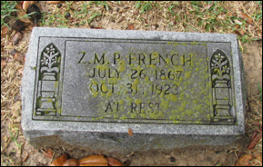

French Family Association
The Official Website of the Surname French
Monticello, Home of President Thomas Jefferson, Culpeper, Virginia
Chart #146, Samuel French, 1740
Culpeper Co., VA; Caswell Co., NC;
Rogersville, Limestone Co., AL
Lexington, Lauderdale Co., AL
This chart updated by Mara French on 9/12/12. Numbers in brackets [ ] show sources and refer to the bibliography at the end of this chart. An asterisk (*) shows continuation of that line. Send any corrections or additions to this chart to marafrench@mindspring.com. Revisions: 2000, 2011, 2012.
Contents
French Family Association Home Page
Genealogy
Samuel French, compiled by Shari Bennett, approximately 250 Frenches
Benjamin French, compiled by Rick Freder, 19 Frenches
History and Background
Is Samuel French a brother of George French?
In the 1790 Census of South Carolina, Samuel French could be a brother of George French of Greenville, SC, (in other words, another son of Jacob French of FFA Chart #195) but so far we have no records indicating this.
Ref. [25] states that Samuels property is in the same general area as John Peter Frenchs property of FFA Chart #136. Jacob French of FFA Chart #195 also turns up in this neck of the woods, but both may have decided that Greenville was a poor farming area. The section of land along the Saluda River is very hilly with many trees and definitely not flat. John Peter Frenchs son, Jesse, owned 1800 acres along the Saluda River when he died. His land was on both sides of Highway 76 near Princeton. Ref. [6] has been to this area many times and has seen the French name all over the area. She has scoured the Courthouse records in Greenville and Anderson Counties and believes she has all that there is for the family of FFA Chart #136 [25].
Ref. [26] says No. It has been thought that Samuel French was a brother of George French of FFA Chart #136 (both born ca. 1730) simply because they both appear in Greenville, SC, at the same time; however, Ref. [26] shows otherwise: A long ago I found Samuel and in fact wrote a brief history of what I could find. I believe Linda, Rai and I all thought he was the missing ancestor. Further research is needed, but he appears to have lived in North Carolina (1750-1786), South Carolina (1790), and may have moved to Kentucky with his son Benjamin. I finally traced a Samuel French to Limestone County, Alabama where he was living with Benjamin when he died on August 13, 1834. This is chart, FFA Chart #146.

Note the early names of Joseph French in 1795 and Samuel French in 1793; they both must have been born before 1775 and could be of FFA Chart #146 or #184.
Grantee – a person to whom a grant is made.
Grantor – a person who makes a grant.
First Generation
1.1* Samuel French Sr., b. ca. 1745 in VA, and lived in NC, KY, and AL. Even though it seems apparent that Samuel French in Mercer County, KY records in 1794 thru 1804 was Henry French's brother - he was not included in Jacob Frenchs will of 1788 (see FFA Chart #195). Jacob French died in 1788, and he seemed to strive for fairness and equality.
"War 4" from VA State Library and Archives, p. 177, "A list of soldiers of the Virginia Line on Continental Establishment who have received certificates for the balances of their full pay agreeable to an act of Assembly passed November Session, 1781: FRENCH, Samuel, Sol. Inf., received by himself, 24 (pounds?); FRENCH, Benjamin, Sol. Inf., received by Sam'l FRENCH, 36".
Chronology
ca. 1745 -- Samuel French born
1761 -- Son William French born
1764 -- Son Benjamin French born in Culpepper, VA
1768 -- Daughter Lucy French born in Chesterfield (sic) VA
1770 -- Daughter Frances French born in VA
1774 -- Served for the British in VA, granted 200 acres by the King of England at Petersburg, VA which is not far from Chesterfield. Served in the French & Indian War.
1784 -- Son Benjamin married in Caswell Co. NC
1789 -- Daughter Lucy married in Fayette, KY
1790 -- In Caswell Co., NC
ca. 1790 -- Daughter Franky (Frances) married Jesse Payne, b. 1757 in VA
1792 -- In Caswell, NC
1798 – See Bill of Chancery, Mercer County
1800 -- AL, TN, KY, and NC not in census.
1800 -- Daughter Franky French Payne lived in Caswell Co., NC
1801 -- In Caswell Co., NC
1805 -- Witness in Caswell Co., NC
1808 -- Son Benjamin left Warren Co., KY for Limestone, AL
1810 -- Possibly in Person Co., NC; however, there is a Samuel French listed in the 1810 Tax List of Stewart Co., TN.
1812 – Samuel C. French listed in Company 2nd Regiment under Major General John Cocke, in the W. Tennessee Militia in the War of 1812.
1820 -- In Stewart Co., TN, with a family of 5
(daughter also in TN that year). He was one of 41 men named Samuel French in
the 1820 census.
2 males under 10,
1 male 16-25, b. 1795-1804, Samuel b. ca. 1797
1 female under 10,
1 female 16-25,
1823 -- Son Benjamin married in Limestone Co., AL
1830 – Listed in Limestone Census of Alabama.
He was one of 59 men named Samuel French in the 1830 census. He had 6 in his
family:
1 male 10-14, b. 1816-1820,
1 male 30-39, b. 1791-1800, Samuel
1 male under 5, b. 1825-1830,
2 females 5-9, b. 1821-1830,
1 female 30-39, b. 1791-1800, his wife
1834 – August 13, 1834, Samuel French died in Limestone Co., AL, in the presence of his son Benjamin.
1837 -- "At court held for Limestone County August 1837 satisfactory evidence was produced in court to prove that Benjamin French, William French and Franky Pane wife of Jesse Pane late Francky French and Lucy Tetrick late Lucy French the children and heirs at latum for to Samuel French late a Lieutenant in the second Regiment of the revolutionary state troops of Virginia who was honorably discharged from the service." SOURCE: Orphan Ct. Minutes 1835-43 page 177.
Bill of Chancery, Mercer County
Email from Dianna Rose [43] to Shirley Scott [27], 3 Feb 2007
The answer of Christopher Houts shows the relationship between Henry French (who was the complainant in the lawsuit) and Samuel French. I am including the transcription of this answer below that I have in my records. I am unsure where you were researching but these records were contained in the Clerk of the Mercer Circuit Court's office, not the County Clerk. They are the original papers from the 1700s and 1800s. Unfortunately, these records have been removed from Mrs. Bishop's office to Frankfort now to the Archives. They can still be viewed but the conditions are very stringent before they will allow them to be accessed. They were contained in bundles tied with ribbons when they were still here in Mercer County. There is also another reference that refers to their relationship as brothers but I can't lay my hands on it at this time. The reference while it was still here was Bundle F - 1798. You had to literally look through the entire bundle to locate documents and they were and are very fragile. Some were too fragile to photocopy. Does this help? The question marks are mine because I was unsure about the verbage. Lawsuit - French v. Houts - Mercer County, Kentucky: The answer of Christopher Houts [1] in a Bill of Chancery exhibited against himself by Henry French in the Court of Mercer County, 27th day of February 1798.
This Deft now and at all other times saving and reserving to himself all &~ all manner of Benefits of exception to the many errors, untruths &~ uncertainties in the said complainats (sic) Bill of Complaint contained the answer thereto or as much thereof as it is advised it is material for him to answer to he answers it and saith That here it is that this Deft instituted a suit ___________ Judgment at common Law against s'd com't on a Note assigned to this Deft from Isaac Coffman and this Deft expressly says that before he traded (?) for said Note he talked with Complt who acknowledged it to be Just &~ said he would pay it. This Deft says that the comp't never did deliver a Note on Smith or any other person for fifty Bushels of salt as stated in the Bill But Samuel French [2] a Brother of the Comp't being indebted to this Deft offered a Note on s'd Smith which note was executed to the Comp't as a Discharge or payment of the debt owed by the s'd Samuel French to this Deft But this Deft believes from what had passed said Smith was insolvent utterly refused to take the Note as a payment of the debt owed by Samuel French. The s'd Samuel French then said that he knew the s'd Smith was not good for payment of the Note but requested this Deft to take the Note as a Neighbour & friend and try to get something. This Deft took s'd Note but never got anything from s'd note from Smith & afterwards s'd Samuel discharged the debt he owed to this Deft took back the Note on Smith & the s'd note this Deft has since seen as he believes in the possession of William McGinnis* who told this Deft that he received the s'd note from Samuel French. That this Deft never heard that the com't set up any claim to s'd note on Smith untill very latterly (?) and since this Deft sued the Comp & often since the said Samuel delivered the s'd note on Smith, the Comp't has acknowledged the Justice of the debt he owed to this Deft. This Deft. Positively declares that he did give s'd Comp't notice according to the requisitions of the Note on which suit was brought & that it was proven on the trial a Common Law & this Deft further says that when he gave notice to s'd Comp't he hired Waggons to go for the salt & also some hides he had at the Falls one of which Waggons belonged to the Comp't & the said wagons went to the Falls for the Hides, then went to the Lick & waited two days as this Deft is informed & believes & then returned without any salt. This Deft. Conceives that the Comp't had fair trial a(t) Common Law, that on the day of trial he believes that the Councile moved for a Continuance of the cause on account of the absence of some of the Witnesses and for the want of the deposition of Smith, but the Court perceiving that no steps had been taken by the Comp't to take the Deposition of s'd Smith & that the cause had been continued on the Docket for a Considerable time ruled the Comp't on to trial & this Deft verily believes that the object of the Comp't is delay for after the Deft commenced suit in a private conversation this Deft asked the Comp't why he by his plea denyed the debt since he has always acknowledged it to be Just, the Comp't said that he was afraid the Deft would get Judgment against him and distress his family while he was gone to the settlement. He told this Deft that he did not know the nature of Law as he did, that the Lawyers would plead anything to keep off the suit but that he would get money while he was gone & would pay this Deft as soon as he returned. This Deft. Says that he never got any notice from s'd Comp't that he was about to take the Deposition of Smith & does not know that a new trial was moved for at term when Judgment was obtained & conceives that it would be extreamly (sic) unjust that there should be a new trial granted & that it would tend to promote delay & injustice even if their (sic) might have been a reason for a new Trial. That this Comp'ts application is too late but denies that there is any reason. Christopher Houts
This day came Christopher Houts personally before me one of the Justices of the Peace for said County and made Oath that the within answer is true so far as he recollects from his own knowledge & what he recollects from the information of others believes to be true given under my hand this 27th day of February 1798 Hugh McGary
-----------------------------
[1] This suit is included not only because it establishes the relationship between Henry French and Samuel French, but it offers another clue as to the migration pattern of the Frenches to Kentucky. Christopher Houts (Houtz) was also located in Shenandoah County (West) Virginia with Henry French in the 1790 census. Isaac Coffman was also included in this same census.
[2] The language in this answer confirms the relationship between Samuel French and Henry French. In addition, there is a deposition wherein the deponent testifies as to their relationship.
[3] From the FFA: Christopher Houts appears in the 1810 census of Washington Co., KY with 6 members in his household. William Hover writes in his will of 25 Nov 1779, listing his children including his daughter Susanna Hover who married Christopher Houts. This will was written in Shenandoah Co., VA. Christopher Houts (spelled Houtz, a German name) appears in the first census of the U.S. in 1790 as head of household in Shenandoah Co., VA, first in 1783. The following people are the other Frenches listed in this 1790 census: French, Penelope and Benjamin Dulany (Fairfax Co., VA of FFA Chart #36); Robert French (Amelia Co., VA of FFA Chart #36), William French (Frederick Co., and Shenandoah Co., VA).
[4] From the FFA: If Christopher Houts calls Samuel French a brother, this might indicate that Christophers sister married Samuel French.
*The French, McGinnis, and Nield
families shared a cemetery on Quirks Run Road off Highway 68 southwest of
Harrodsburg and south of Nevada, KY. Read more about it on FFA Chart #31,
Henry French.
Other Documents
JUDGMENT BOX N#2 - Bernard Neal Versus Samuel and Henry French*
1794
Promissory Note:
Samuel French promises to deliver to Bernard Neal in Danville five second rate cows and calves not to exceed 8 years old nor under five on April 1st ensuing.
17 Dec 1792
Signed: Samuel (his mark) French
Witness: John Warren
Said French has failed to deliver the cows and calves and Neal sues.
Bond:
Samuel French and Henry French* are bound unto Bernard Neal in sum of 41 pounds, 2 shillings, and 4 pence. We bind ourselves and each of our heirs this 20th July 1795. Obligation of the bond is that Neal has served out of Court and execution against the estate of Samuel French for 17 pounds, 10 shillings plus costs. Said Samuel French has tendered Henry French as his security and the debt has been levied on a white horse and a saddle and bridle. If either Samuel or Henry deliver the property to the Sheriff of Mercer Co. on the second Sat. next month, this obligation to be void else to remain in full force and virtue.
Signed: Samuel (his mark) French – Henry French
Witness: Thomas Hanna
The following statement is handwritten by Kaye S. or Eliza K.:
Here we find Henry French and Samuel French appearing on the same documents before 1800 which is a good indication they were related.
JUDGMENT BOX F#3 – Henry and Samuel French Versus Joslems Executors
1797
Henry and Samuel French* make a bond to Edward Powell, executor of Joslem, decd., in the sum of 158 pounds, 13 shillings, 9 pence of the 14th of Sept. 1796. The condition of the bond is such that the executor of Joslem has served an execution against the estate of Henry French and the same was levied against a wagon and 4 horses, the property of said Henry, and he tendered Samuel French his security for the delivery of the wagon and horses. Now if either Henry or Samuel French deliver to the Sheriff of Mercer Co. at Harrodsburg on the second Saturday in next month, then this obligation is to be void, else to remain in full force and virtue.
Signatures: Henry – Samuel French
Witness: Thomas Hannah [sic]
Census and Tax Records
In the 1800 Tax List of Kentucky, Samuel French is listed in Mercer Co., KY. Because Samuel arrived before George, and he arrived in Mercer Co., KY, you might think he is related to Henry French of Mercer Co., KY, FFA Chart #31; however, Henry never had a son named Samuel. Note that there are 2 men born 2 years apart with the name George French in Kentucky in 1872 and 1874; George Washington French and George Hedges French. George Hedges French was a brother of Samuel French and they are not sons of Henry, but of Henrys brother John French who married Catherine Hedges. Note that David French is also listed as owning land 3 Sep 1800 in Jefferson Co., KY.
Military
Samuel was Ens./Lt. Rev War, 1st or 2nd Virginia State Militia, June 1777 to May 1778, resigned due to ill health. Petition in Limestone Co., AL, lists heirs: William French, Benjamin French, Lucy French Tetrick, Franky French Payne [7].
Quoting from "War 4" from VA State Library and Archives, p. 177, "A list of soldiers of the Virginia Line on Continental Establishment who have received certificates for the balances of their full pay agreeable to an act of Assembly passed November Session, 1781: [15]
FRENCH, Samuel, Sol. Inf., received by himself, 24 (pounds?);
FRENCH, Benjamin, Sol. Inf., received by Sam'l FRENCH, 36".
Benjamin and Samuel were brothers.
Death
Samuel died before 1837 [7].
Second Generation
Children of Samuel French Sr. and Mary McCullock?????, 1.1
If you track Samuel French of FFA Chart #146 and the locations of his children at various points in time, you'll see why I suspect this Samuel is the same man who was in Mercer County, KY in 1800 and was the brother of Henry French of Chart #31 [27].
2.1 William French [7], b. 1761 in VA. He m. Susannah Johnson [18].
2.2* Benjamin French, b. 28 Nov 1764 [1][7][18] in Culpeper Co., VA [3], d. 21 Mar 1847 in Rogersville, Lauderdale Co., AL, at 82 years of age.
Marriages
Benjamin m1. Sally M. Turner on 10 Nov 1784 in Caswell Co., NC and had 11 children. Sally was b. in 1764 in Caswell Co., NC, the dau. of Henry Turner and Nancy Anne Kimbrough [18]. She d. 27 Nov 1820 in Limestone Co., AL [5]. Another source says she died on 26 Aug 1822 [17]. Another source says she d. 22 Aug 1822 in Limestone Co., AL, at age 59 [18]. They had 11 children between 1783 and 1807.
After Sally Turners death in 1822, Benjamin m2. Catherine Shoemaker on 23 Sep 1823 in Lauderdale Co., AL [1]. Another source says they married on 10 Nov 1822 [18]. Catherine was a widow. Catherine was b. 1777 and d. 22 Jan 1858 in Limestone Co., AL, at 80 [18]. Both Benjamin and Catherine are in the Lauderdale Co., AL 1840-1850 census. No children from this second marriage.
Military
Benjamin was a Revolutionary War soldier.
Chronology
Yet to come
Census and Tax List Records
1830 census of Limestone, AL, Benjamin appears
with:
1 male 15-19
1 male 60-69, Benjamin b. 1764, age 66
2 females 10-14
1 female 50-59, Catherine, b. 1777, age 53; 1st wife Sally died in
1820.
Land Deeds
Benjamin French of Lauderdale County, AL purchased 79.51 acres of land in Section 39 of T2-R7W on August 1, 1839 [18]. An interesting note found in the AL State Archives in Montgomery states that Benjamin "made the best peach brandy in the community".
The French Family: A Personal History, by Irvin Himmel
The following was taken from "The French Family: A Personal History" by Irvin Himmel:
"My great-great-grandfather of the French family was born May 16, 1787, in North Carolina, when his father Benjamin was about twenty-two years of age. Jesse French married Mary Smith on Jan. 24, 1808, which was the year the family moved to the area later known as Limestone County, Alabama. Mary was born Jan. 14, 1788, in Virginia. In his own handwriting Jesse recorded the date of their marriage as the first entry in a family record. This part of the record is produced above.
Basic data on the families of Jesse French and his son Jeremiah L. French are taken from this family record written in longhand on both sides of two sheets which likely came from an old Bible. This record was preserved by my grandmother Nancy French Melton, passed on to my mother, and recently came into my possession. I know of no other source which provides the names and birthdates of Jesse French's children.
Like his brothers, Jeremiah and Samuel, Jesse "rejoiced in the possession of gigantic strength and size," according to Capt. McClellan. In keeping with the spirit of those pioneer days, these French boys "were often the heroes of 'fist and skull' encounters." (Early History of Limestone County, p. 14)
In 1816, Jesse French was living in Madison County, Mississippi Territory. The first U. S. Government census after Alabama became a state was in 1820, but for the original states that was the fourth such census. the 1820 census lists Jesse French as living in Limestone County. By about 1830 he had acquired land and established residence in Jackson County. There he spent the remainder of his years.
Jackson County forms the northeastern corner of Alabama, and it is bounded on the north by Tennessee, on the east by Georgia, and on the west by Madison County. The Tennessee River flows through the county. The southern tip of the Sequatichie Valley extends into the county from the northeast.
The Cherokee Indians migrated to the Jackson County area, left, then returned in the 1770's. In 1819, the federal government began taking measures to insure the safety of white settlers entering the area. On Dec. 29, 1835, all Cherokee lands in northern Alabama were ceded to the United States, then the Indians were removed to Western reservations, mainly in Oklahoma. by 1838 most of the Indians has been removed. The Cherokees had become quite literate as a result of the alphabet which the half-breed Sequoyah had invented and presented to them at North Sauta Creek in 1820.
Alabama was officially admitted as a state on Dec. 14, 1819. Jackson County was created at that time. The temporary seat of justice was Old Sauta, a former Cherokee Indian Village which had attracted many white settlers. It remained the county seat for two years. On Dec. 13, 1821, Bellefonte became the county seat, and it was the first incorporated town in the county. Located on the Tennessee River, the town flourished until the building of the Memphis-Charleston Railroad in 1855. The courthouse at Bellefonte was burned during the closing days of the Civil War. On Nov. 13, 1868, the seat of justice was established at Scottsboro. A new courthouse was built in 1870 but it burned in 1879. It was rebuilt and used until 1913 when replaced by a completely new structure.
W. Jerry Gist states in 'The Story of Scottsboro, Alabama,' privately published, 1968, p. 29:
"Very little is known of the early history of Sauta and only a few fragments remain to remind us of its former existence. The small town was located near Sauta Creek some distance from its mouth. McCutheon's School stood at one time on the site of the old courthouse and nearby is a saltpetre cave from which the early settlers obtained much of their salt supply."
When the 1850 census was taken, Jesse French was listed as a farmer, born in North Carolina. His wife Mary was listed as born in Virginia. Four children, all born in Alabama, were then living at home: Jerry, age 22; Henry, age 20; Isabell, age 18; and Jessee, age 16. These are the last four of Jesse French's children named in the family record.
The Memphis and Charleston Railroad Company must have seemd an attractive investment to people in Northern Alabama. The 'M. & C. R. R. Co. Annual Report for 1856-1857' lists its stockholders in the Eastern Division. Among them, two names are of special interest. Jesse French of Jackson County had 8 shares, and Amos French of Limestone County had 4 shares.
Jesse French died in Jackson County, Feb. 3, 1857, being a little short of three-score and ten years. His widow, Mary Smith French, died Nov. 19, 1863, having attained more than seventy-five years.
"My maternal great-great-great-grandfather bearing the name French (Benjamin French) was born Nov. 28, 1764. He lived in Virginia, probably Culpepper County. At the age of fifteen he enlisted in the army and participated in the Revolutionary War.
He enlisted between the middle and 19th of Sept., 1780, being mustered in service under Captain Valentine Harrison, and was in Col. John Green's Virginia continental regiment. Col. Green was a native of Culpepper County, born about 1730, and entered the Continental Army as a Captain on Jan. 20, 1776. He was promoted to Colonel, Jan. 26, 1778. (Horace Edwin Hayden, Virginia Genealogies, Baltimore: Genealogical Pub. Co., 1966, p. 548.)
Private Benjamin French took part in four major battles and a number of skirmishes. When applying for government assistance as a veteran of the Revolution, he listed the following as the battles in which he took part: (1) the battle of Guilford; (2) the battle of Camden; (3) the siege of Ninety-Six; and (4) the battle of Eutaw Springs. ( Photocopies of was record supplied by General Services Administration, National Archives and Records Service.)
It was on Dec. 2, 1780, that Maj. Gen. Nathanael Greene took command of the Southern Department at charlotte, North Carolina. The Southern Army had about 1600 men at that time. On Dec. 19, Gen. Greene moved 1000 of his men southward to threaten the British under Cornwallis at Winnsboro, South Carolina. The next day Brig. Gen. Daniel Morgan took the remaining 600 men from Charlotte for western South Carolina. Both divisions soon received reinforcements.
In mid-Jan., 1781, Col. John Green of Virginia brought 400 militia to join Gen. Nathanael Greene's division. The dividing of the Southern Army forced Cornwallis to split his army. Lt. Col. Tarleton took one division and fought Morgan's men at Cowpens, South Carolina, on Jan. 17. Tarleton was soundly defeated, with nine-tenths of his men killed or captured. Morgan moved his men eastward to join Greene. The two divisions of the Southern Army met at the Catawba River on Jan. 30, 1781. Greene decided to retreat northward to escape Cornwallis. He moved his men through Guilford, North Carolina, and into Virginia with Cornwallis in hot pursuit. The Southern Army crossed the Dan River on Feb 14. Cornwallis was forced to give up the chase, returning southward to Hillsboro, North Carolina.
In a few days Greene moved his army in the direction of Hillsboro, having received reinforcements from Virginia. On Mar. 15, 1781, at Guilford Court House, west of Hillsboro, the British and Americans faced each other. This was the first of the major battles in which Private Benjamin French participated. Col. John green's regiment of Virginia Continentals was placed in the third line but held out of the fighting in case retreat was necessary. Although the British suffered heavy losses, Gen. Greene deemed it wise to retreat. Col. John Green's regiment took on the British while the remainder of the Americans withdrew. "Under heavy fire Green's regiment stood firm until all the rest of the Americans had left the field; then it too retired." (Christopher Ward, The War of the Revolution, New York: MacMillan Co., 1952, Vol. 2, p. 792.)
Cornwallis was in no position to pursue Greene after Guilford. The British moved southward to Wilmington. Greene decided to concentrate on South Carolina where Lt. Col. Rawdon commanded the British forces. The two armies fought at Hobkirk's Hill on the outskirts of Camden, Apr. 25. This is doubtless the "battle of Camden" to which Benjamin French referred. On the same day of this encounter Cornwallis left Wilmington to march to Virginia. Rawdon evacuated Camden on May 10.
Ninety-Six was the name of a village surrounded by a stockade and under British control. Lt. Col. Cruger commanded this strongly fortified post. Greene brought his army and put the fort under siege from May 22 to June 19, 1781. The Americans were busy building approaches. Word came on June 11 that Rawdon was coming from Charleston to aid Cruger. Greene tried to storm the fort before Rawdon's arrival. There was bitter and bloody conflict but the Americans were forced to withdraw on the 20th. This was the siege of Ninety-Six to which Benjamin French referred.
In July and Aug., Greene's army spent several weeks resting in the High Hills of Santee in South Carolina. He now had about 2000 men. Lt. Col. Stuart had succeeded Rawdon as head of the British forces in the Carolinas, having about the same number of men as Greene. The American forces marched to Eutaw Springs where the British were encamped. A battle ensued which turned out to be the last major battle of the Revolutionary War in the South. The date was Sept. 8, 1781. Both sides suffered heavy casualties and both sides claimed victory. This was the last major battle in which Benjamin French fought.
On Oct. 19, 1781, Cornwallis surrendered his army at Yorktown. Peace was still more than a year away, and troops in the South underwent many hardships.
Benjamin French was discharged Jan. 22, 1782, having served slightly more than sixteen months. He was seventeen years of age when discharged at Salisbury, North Carolina. His pension records give his term of service as eighteen months. His pension enrollment began Oct. 17, 1818, and was for $96.00 per annum.
After the Revolutionary War, Benjamin French married in North Carolina. The North Carolina State Census for 1786 lists a Benjamin French and a Samuel French as heads of households in Caswell County. Both families resided in the Gloucester District in the southeast part of the county. It appears that Benjamin and his family left North Carolina before the federal census of 1790. By 1800 he is listed in Barren County, Kentucky. (The "Second Census" of Kentucky 1800, Baltimore: Genealogical Pub. Co., 1970.) Later he moved to the neighboring county of Warren.
The area known as Kentucky was a part of Virginia until its admission to the Union on Jun. 1, 1792. Settlers from the east had moved into Kentucky through the Cumberland Gap in the 1770s and 1780s. The pace accelerated in the 1790s.
Warren County, Kentucky, was created out of Logan County, Dec. 19, 1796. Bowling Green was established as the county seat. It was from Warren County that Benjamin French, with his large family, removed to what afterward became know as Limestone County, Alabama. The area was then a part of Mississippi territory. According to records in the Department of Archives and History at Raleigh, North Carolina, the power of attorney for Benjamin French of Madison County, Mississippi Territory, was given to James Kimbrow of Giles County, Tennessee, to recover all sums of money due him, as of Sept. 5, 1814, and was registered in Caswell County, North Carolina, July Court, 1817. This establishes that the Benjamin French who was in Caswell County, North Carolina, in 1786, was the same Benjamin French who came to north Alabama when it was still Mississippi Territory.
According to Capt. R. A. McClellan's "Early History of Limestone County" (Reprinted from the Athens Post of June, 1881), Benjamin French and his family settled on Limestone Creek, nine miles east of Athens, in 1808. (p. 13) That was eleven years before Alabama became a state, and it was ten years before Athens was incorporated as a town.
Limestone was Chickasaw country in those days. White settlers who came into the area west of Madison County were intruders. The federal government again and again sent soldiers to remove the settlers. When forced out, the settlers would temporarily remove to Madison County or to nearby Tennessee. The issue of intruders on Chickasaw lands reached a boiling point in 1810. The War Department sent notice in July that all white settlers were to be removed by Dec. 15. The white inhabitants of what later became Limestone County petitioned President James Madison and the Congress of the United States. The petition, dated Sept. 5, 1810, was signed by more than 400 settlers, including Benjamin French and his son Amos. (Robert Henry Walker Jr., History of Limestone County Alabama, Limestone County commission, 1973, pp. 17-22, 177-181) Neither Indians nor soldiers were successful in removing Limestone's first white inhabitants.
The Chickasaws ceded their lands in the Limestone area to the federal government in 1816. Congress established out of the Mississippi Territory on March 1, 1817, the Territory of Alabama. On Feb. 6, 1818, Limestone County was designated a political subdivision of the Territory of Alabama. In Dec. of 1819, Alabama became a part of the Union.
Cotton Port was an early landing on the Tennessee River just south of the town of Mooresville near Piney Creek. "In 1808, Benjamin French established his pioneer home on Limestone Creek, but soon removed to the site of the future Cotton Port. A short while later the first cotton was shipped from Limestone County to New Orleans, and cotton Port became an important landing." (W. Stuart Harris, Dead Towns of Alabama, University of Alabama Press, 1985, p. 74)
Official records show that Benjamin French appeared before the County Court of Madison County, District of Alabama, Nov. 27, 1820, to apply for government benefits according to the Act of Congress of Mar. 18, 1818, for Revolutionary War service. A resident of Limestone county, he listed his property as follows: one mare and colt, twenty hogs, nine head of cattle, and one-half quarter section of land at $6.54 per acre on which the first installment only had been paid to the general government. Living with him at that time were his wife (about 54 years old) and three daughters: Anne (about fifteen), Frances (about fourteen), and Jinney (about twelve). The older children had already left home.
It appears that this wife died between Nov. 27, 1820, and Sept. 23, 1823. On the latter date a marriage license was issued in Limestone County to Benjamin French and Catharine Shumaker [Shoemaker
]. The marriage was solemnized by Albert Higgins, Justice of the Peace. Benjamin was about fifty-eight at the time of this marriage.
Four years later, on Sept. 7, 1827, he applied to Limestone County Court of Record to have his pension restored. It had been discontinued sometime earlier. He listed his property as follows: one horse (worth $15) and two cows (worth $14). He gave his occupation as a planter, explaining that he was too old and superannuated to follow it. He gave his wife's age as about fifty-seven years, and stated that a youth (about twelve years old), the son of his second wife was living at home. This son would have been about age eight when Benjamin married Catharine. It appears that this was in fact a stepson, and that all of Benjamin's children were by his first wife. He explained that since his earlier listing of his property for pension purposes (1820), he had sold his eighty acres of land to Jesse French in 1823, and had given over two cows, one horse, and $60 in cash to pay a dept due to Jesse French. (Jesse was one of his sons.) The pension was restored in Jan. 1830.
After living on Limestone Creek and at Cotton Port, Benjamin French settled just west of Dr. Blair's plantation on Elk River. One historian compares him to Daniel Boone, "for one gets the feeling that he didn't like 'crowded' areas." It was around 1830 that he moved "over Elk" and built the log house shown at right. It was a single-pen cabin with a shed room to the rear. A later addition was attached to on side of the cabin. The house was destroyed by fire in the late 1970s. (Chris Edwards and Faye Axford, The Lure and Lore of Limestone County, Tuscaloosa: Portals Press, 1978, p. 149.)
Benjamin and Catharine French moved to Lauderdale County about ten years before his death. He died Mar. 21, 1847, being eighty-two years of age. Limestone County records show that Catharine appeared before Robert W. Figg, Justice of the Peace, Apr. 29, 1847, to have it recorded that Amos French was given power of attorney for her to receive pension due to Benjamin from the government, with the payment terminating on the day of his death. In June, 1855, she applied for a widow's pension according to the Act of Congress of Feb. 3, 1853. She received $96 per year. She also was granted 160 acres under Act of Mar. 3, 1855, for the services of her husband.
The following is recorded in 'Revolutionary Soldiers in Alabama,' 1911, from the State of Alabama, Department of Archives and History:
"French, Benjamin. 'Died -- Near Rodgersville on the 21st inst., Mr. Benjamin French, age 84 years, an old faithful Revolutionary soldier.' -- Southern Advocate, Huntsville, April 2, 1847."
It should be noted that his age at the time of his death was eighty-two, not eighty-four as indicated in this account. Capt. McClellan erroneously puts the date of Benjamin French's death as 1840. He also incorrectly gives his age as over ninety at the time of his death. A declaration and affidavit filed in Limestone County on Jun. 6, 1855, by Catharine French contains a number of inaccuracies, due to her advanced age and reliance on memory.
A record similar to that quoted above is preserved in 'The Alabama Historical Quarterly,' Winter Issue, 1944, State Department of Archives and History:
"French, Benjamin -- Satisfactory evidence was this day exhibited to this Court that Benjamin French was a Revolutionary pensioner of the United States at the rate of eight dollars per month; was a resident of the County of Lauderdale in said State of Alabama and died in said County of Lauderdale and State aforesaid on the twenty-first day of March in the year one thousand eight hundred and forty-seven and that he left a widow whose name is Catherine French; whereupon the same is ordered by the Court to be entered of records which is done. -- 'Minutes of Orphans Courts,' Feb. 1847 - May 1850, p. 18. Recorded at Athens, Limestone County, Ala."
The will of Benjamin French was filed in Lauderdale County and witnessed by Samuel Lentz, Bennett Rose, and Zacariah Tuten. The will directs that his landed estate of his home plantation be equally divided among his own eleven children, and that Yancy Shoemaker receive an equal share with his own heirs. It is probable that Yancy Shoemaker was his stepson. The only one of his own children who was specifically named in the will was his daughter Ann French.
Caswell County, North Carolina, marriage records list Benjamin French as marrying Sally Turner, Nov. 10, 1784. James Turner was a witness. Henry Turner had moved with his family from Culpepper county, Virginia, to Caswell County, North Carolina, about 1775. He had twelve children, including a daughter named Sally and a son named James. The date of the marriage is about a year and a half after the birth of Benjamin's son Amos. It is possible that one of the dates is wrong. Discrepancies in dates of birth and ages are rather common in the 1700s and 1800s.
Benjamin French had five sons and six daughers. Incomplete information makes it impossible to know the exact sequence of their births. Some were born in North Carolina and some in Kentucky...."
Death
Benjamin died near Rogersville in Limestone Co., AL, on 21 Mar 1847. Another resource says he was buried in Lauderdale Co., VA.
The following information is from Eunice Pace: "Benjamin is buried behind a barn in the area of Lexington, AL and the grave was marked by the DAR, however, I have reliable information that says the grave is NOT where the marker is displayed, but is nearby........behind the old barn."
The following information was taken from "Valley Leaves Lauderdale County, June 1982", pages 168-169:
Will of Benjamin French
15 December 1839 "Weak in body" To my beloved wife, Katharine French, for her lifetime. At her death to dispose of all my estate, livestock, household and kitchen furniture among her own children or as she is otherwise disposed to do. At her death, my landed estate of my home plantation, to be divided equally "among my own children, lawful heirs, eleven in number, and for Yancy Shoemaker to have an equal portion with my own lawful heirs". "The 80 Acres of land which I entered (I think in the 25th Section) for which Yancy Shoemaker hold my bond for one forty Acres of said entry the other 40 Acres of said entry, I give and bequeath to my beloved daughter Ann French" and her heirs. Witnesses: Samuel Lentz, Bennett Rose, Zacariah Tooten. Proven by Samuel Lentz and Bennett Rose before Wm. B. Wood, Judge, 21 Nov 1848. Recorded: 22 May 1850.
Yancy Shoemaker was a son of Benjamins second wife by a previous marriage.
The article below says Benjamin was 73 in 1847, making his birth in 1774 which could not be due to the fact that he was in the Revolutionary War and he would have been too young. The article also says he died in 1857, but he actually died in 1847, and probably thats why this article was written. The article mentions his son Amos, who was in the War of 1812.

***************************************************************************
Military Career
The following was taken from "The French Family: A Personal History" by Irvin Himmel, pages 1-6:
"My maternal great-great-great-grandfather bearing the name French was born Nov. 28, 1764. He lived in Virginia, probably Culpepper County. At the age of fifteen he enlisted in the army and participated in the Revolutionary War.
He enlisted between the middle and 19th of Sept., 1780, being mustered in service under Captain Valentine Harrison, and was in Col. John Green's Virginia continental regiment. Col. Green was a native of Culpepper County, born about 1730, and entered the Continental Army as a Captain on Jan. 20, 1776. He was promoted to Colonel, Jan. 26, 1778. (Horace Edwin Hayden, Virginia Genealogies, Baltimore: Genealogical Pub. Co., 1966, p. 548.)
Private Benjamin French took part in four major battles and a number of skirmishes. When applying for government assistance as a veteran of the Revolution, he listed the following as the battles in which he took part: (1) the Battle of Guilford in Greensboro, NC, on 15 Mar 1781; (2) the Battle of Camden in SC on 16 Aug 1780; (3) the Siege of Ninety-Six in SC from May 22 to Jun 18, 1781; and (4) the Battle of Eutaw Springs in Eutawville, SC on 8 Sep 1781.
It was on Dec. 2, 1780, that Maj. Gen. Nathanael Greene took command of the Southern Department at Charlotte, North Carolina. The Southern Army had about 1600 men at that time. On Dec. 19, Gen. Greene moved 1000 of his men southward to threaten the British under Cornwallis at Winnsboro, South Carolina. The next day Brig. Gen. Daniel Morgan took the remaining 600 men from Charlotte for western South Carolina. Both divisions soon received reinforcements.
In mid-Jan., 1781, Col. John Green of Virginia brought 400 militia to join Gen. Nathanael Greene's division. The dividing of the Southern Army forced Cornwallis to split his army. Lt. Col. Tarleton took one division and fought Morgan's men at Cowpens, South Carolina, on Jan. 17. Tarleton was soundly defeated, with nine-tenths of his men killed or captured. Morgan moved his men eastward to join Greene. The two divisions of the Southern Army met at the Catawba River on Jan. 30, 1781. Greene decided to retreat northward to escape Cornwallis. He moved his men through Guilford, North Carolina, and into Virginia with Cornwallis in hot pursuit. The Southern Army crossed the Dan River on Feb 14. Cornwallis was forced to give up the chase, returning southward to Hillsboro, North Carolina.
In a few days Greene moved his army in the direction of Hillsboro, having received reinforcements from Virginia. On Mar. 15, 1781, at Guilford Court House, west of Hillsboro, the British and Americans faced each other. This was the first of the major battles in which Private Benjamin French participated. Col. John green's regiment of Virginia Continentals was placed in the third line but held out of the fighting in case retreat was necessary. Although the British suffered heavy losses, Gen. Greene deemed it wise to retreat. Col. John Green's regiment took on the British while the remainder of the Americans withdrew. "Under heavy fire Green's regiment stood firm until all the rest of the Americans had left the field; then it too retired." (Christopher Ward, The War of the Revolution, New York: MacMillan Co., 1952, Vol. 2, p. 792.)
Cornwallis was in no position to pursue Greene after Guilford. The British moved southward to Wilmington. Greene decided to concentrate on South Carolina where Lt. Col. Rawdon commanded the British forces. The two armies fought at Hobkirk's Hill on the outskirts of Camden, Apr. 25. This is doubtless the "battle of Camden" to which Benjamin French referred. On the same day of this encounter Cornwallis left Wilmington to march to Virginia. Rawdon evacuated Camden on May 10.
Ninety-Six was the name of a village surrounded by a stockade and under British control. Lt. Col. Cruger commanded this strongly fortified post. Greene brought his army and put the fort under siege from May 22 to June 19, 1781. The Americans were busy building approaches. Word came on June 11 that Rawdon was coming from Charleston to aid Cruger. Greene tried to storm the fort before Rawdon's arrival. There was bitter and bloody conflict but the Americans were forced to withdraw on the 20th. This was the siege of Ninety-Six to which Benjamin French referred.
In July and Aug., Greene's army spent several weeks resting in the High Hills of Santee in South Carolina. He now had about 2000 men. Lt. Col. Stuart had succeeded Rawdon as head of the British forces in the Carolinas, having about the same number of men as Greene. The American forces marched to Eutaw Springs where the British were encamped. A battle ensued which turned out to be the last major battle of the Revolutionary War in the South. The date was Sept. 8, 1781. Both sides suffered heavy casualties and both sides claimed victory. This was the last major battle in which Benjamin French fought.
On Oct. 19, 1781, Cornwallis surrendered his army at Yorktown. Peace was still more than a year away, and troops in the South underwent many hardships.
Benjamin French was discharged Jan. 22, 1782, having served slightly more than sixteen months. He was seventeen years of age when discharged at Salisbury, North Carolina. His pension records give his term of service as eighteen months. His pension enrollment began Oct. 17, 1818, and was for $96.00 per annum.
After the Military
After the Revolutionary War, Benjamin French married in North Carolina. The North Carolina State Census for 1786 lists a Benjamin French and a Samuel French as heads of households in Caswell County. Both families resided in the Gloucester District in the southeast part of the county. It appears that Benjamin and his family left North Carolina before the federal census of 1790. By 1800 he is listed in Barren County, Kentucky. (The "Second Census" of Kentucky 1800, Baltimore: Genealogical Pub. Co., 1970.) Later he moved to the neighboring county of Warren.
The area known as Kentucky was a part of Virginia until its admission to the Union on Jun. 1, 1792. Settlers from the east had moved into Kentucky through the Cumberland Gap in the 1770s and 1780s. The pace accelerated in the 1790s.
Warren County, Kentucky, was created out of Logan County, Dec. 19, 1796. Bowling Green was established as the county seat. It was from Warren County that Benjamin French, with his large family, removed to what afterward became know as Limestone County, Alabama. The area was then a part of Mississippi territory. According to records in the Department of Archives and History at Raleigh, North Carolina, the power of attorney for Benjamin French of Madison County, Mississippi Territory, was given to James Kimbrow of Giles County, Tennessee, to recover all sums of money due him, as of Sept. 5, 1814, and was registered in Caswell County, North Carolina, July Court, 1817. This establishes that the Benjamin French who was in Caswell County, North Carolina, in 1786, was the same Benjamin French who came to north Alabama when it was still Mississippi Territory.
According to Capt. R. A. McClellan's "Early History of Limestone County" (Reprinted from the Athens Post of June, 1881), Benjamin French and his family settled on Limestone Creek, nine miles east of Athens, in 1808. (p. 13) That was eleven years before Alabama became a state, and it was ten years before Athens was incorporated as a town.
Limestone was Chickasaw country in those days. White settlers who came into the area west of Madison County were intruders. The federal government again and again sent soldiers to remove the settlers. When forced out, the settlers would temporarily remove to Madison County or to nearby Tennessee. The issue of intruders on Chickasaw lands reached a boiling point in 1810. The War Department sent notice in July that all white settlers were to be removed by Dec. 15. The white inhabitants of what later became Limestone County petitioned President James Madison and the Congress of the United States. The petition, dated Sept. 5, 1810, was signed by more than 400 settlers, including Benjamin French and his son Amos. (Robert Henry Walker Jr., History of Limestone County Alabama, Limestone County commission, 1973, pp. 17-22, 177-181) Neither Indians nor soldiers were successful in removing Limestone's first white inhabitants.
The Chickasaws ceded their lands in the Limestone area to the federal government in 1816. Congress established out of the Mississippi Territory on March 1, 1817, the Territory of Alabama. On Feb. 6, 1818, Limestone County was designated a political subdivision of the Territory of Alabama. In Dec. of 1819, Alabama became a part of the Union.
Cotton Port was an early landing on the Tennessee River just south of the town of Mooresville near Piney Creek. "In 1808, Benjamin French established his pioneer home on Limestone Creek, but soon removed to the site of the future Cotton Port. A short while later the first cotton was shipped from Limestone County to New Orleans, and cotton Port became an important landing." (W. Stuart Harris, Dead Towns of Alabama, University of Alabama Press, 1985, p. 74)
Official records show that Benjamin French appeared before the County Court of Madison County, District of Alabama, Nov. 27, 1820, to apply for government benefits according to the Act of Congress of Mar. 18, 1818, for Revolutionary War service. A resident of Limestone county, he listed his property as follows: one mare and colt, twenty hogs, nine head of cattle, and one-half quarter section of land at $6.54 per acre on which the first installment only had been paid to the general government. Living with him at that time were his wife (about 54 years old) and three daughters: Anne (about fifteen), Frances (about fourteen), and Jinney (about twelve). The older children had already left home.
It appears that this wife died between Nov. 27, 1820, and Sept. 23, 1823. On the latter date a marriage license was issued in Limestone County to Benjamin French and Catharine Shumaker [Shoemaker]. The marriage was solemnized by Albert Higgins, Justice of the Peace. Benjamin was about fifty-eight at the time of this marriage.
Four years later, on Sept. 7, 1827, he applied to Limestone County Court of Record to have his pension restored. It had been discontinued sometime earlier. He listed his property as follows: one horse (worth $15) and two cows (worth $14). He gave his occupation as a planter, explaining that he was too old and superannuated to follow it. He gave his wife's age as about fifty-seven years, and stated that a youth (about twelve years old), the son of his second wife was living at home (this was Yancy Shoemaker). This son would have been about age eight when Benjamin married Catharine. It appears that this was in fact a stepson, and that all of Benjamin's children were by his first wife. He explained that since his earlier listing of his property for pension purposes (1820), he had sold his eighty acres of land to Jesse French in 1823, and had given over two cows, one horse, and $60 in cash to pay a dept due to Jesse French. (Jesse was one of his sons.) The pension was restored in Jan. 1830.
After living on Limestone Creek and at Cotton Port, Benjamin French settled just west of Dr. Blair's plantation on Elk River. One historian compares him to Daniel Boone, "for one gets the feeling that he didn't like 'crowded' areas." It was around 1830 that he moved "over Elk" and built the log house shown below. It was a single-pen cabin with a shed room to the rear. A later addition was attached to on side of the cabin. The house was destroyed by fire in the late 1970s. (Chris Edwards and Faye Axford, The Lure and Lore of Limestone County, Tuscaloosa: Portals Press, 1978, p. 149.)
Benjamins cabin on Elk River
Obituary
Benjamin and Catharine French moved to Lauderdale County about ten years before his death. He died Mar. 21, 1847, being eighty-two years of age. Limestone County records show that Catharine appeared before Robert W. Figg, Justice of the Peace, Apr. 29, 1847, to have it recorded that Amos French was given power of attorney for her to receive pension due to Benjamin from the government, with the payment terminating on the day of his death. In June, 1855, she applied for a widow's pension according to the Act of Congress of Feb. 3, 1853. She received $96 per year. She also was granted 160 acres under Act of Mar. 3, 1855, for the services of her husband.
The following is recorded in 'Revolutionary Soldiers in Alabama,' 1911, from the State of Alabama, Department of Archives and History:
"French, Benjamin. 'Died -- Near Rodgersville on the 21st inst., Mr. Benjamin French, age 84 years, an old faithful Revolutionary soldier.' -- Southern Advocate, Huntsville, April 2, 1847."
It should be noted that his age at the time of his death was eighty-two, not eighty-four as indicated in this account. Capt. McClellan erroneously puts the date of Benjamin French's death as 1840. He also incorrectly gives his age as over ninety at the time of his death. A declaration and affidavit filed in Limestone County on Jun. 6, 1855, by Catharine French contains a number of inaccuracies, due to her advanced age and reliance on memory.
A record similar to that quoted above is preserved in 'The Alabama Historical Quarterly,' Winter Issue, 1944, State Department of Archives and History:
"French, Benjamin -- Satisfactory evidence was this day exhibited to this Court that Benjamin French was a Revolutionary pensioner of the United States at the rate of eight dollars per month; was a resident of the County of Lauderdale in said State of Alabama and died in said County of Lauderdale and State aforesaid on the twenty-first day of March in the year one thousand eight hundred and forty-seven and that he left a widow whose name is Catherine French; whereupon the same is ordered by the Court to be entered of records which is done. -- 'Minutes of Orphans Courts,' Feb. 1847 - May 1850, p. 18. Recorded at Athens, Limestone County, Ala."
The will of Benjamin French was filed in Lauderdale County and witnessed by Samuel Lentz, Bennett Rose, and Zacariah Tuten. The will directs that his landed estate of his home plantation be equally divided among his own eleven children, and that Yancy Shoemaker receive an equal share with his own heirs. It is probable that Yancy Shoemaker was his stepson. The only one of his own children who was specifically named in the will was his daughter Ann French.
Caswell County, North Carolina, marriage records list Benjamin French as marrying Sally Turner, Nov. 10, 1784. James Turner was a witness. Henry Turner had moved with his family from Culpepper County, Virginia, to Caswell County, North Carolina, about 1775. He had twelve children, including a daughter named Sally and a son named James. The date of the marriage is about a year and a half after the birth of Benjamin's son Amos. It is possible that one of the dates is wrong. Discrepancies in dates of birth and ages are rather common in the 1700s and 1800s.
Benjamin French had five sons and six daughters. Incomplete information makes it impossible to know the exact sequence of their births. Some were born in North Carolina and some in Kentucky...."
French Cemetery
Township 1, Range 8, Section 9
Location:
From Lexington, go west on AL 64 for one block, turn right on CR 48 and then left
on CR 136. Continue to the Glover home. There is a historical marker by the
road. The cemetery is on the right near the old barn. This information was
copied from Cemeteries of East Lauderdale County, Alabama, page 398, by
Robert Torbert in January 2008.
Name
French, Benjamin DOB DOD Notes French, M. 28 Nov 1764 21 Mar 1847 Continental
Line, Revolutionary War
French Glover Farm
French Glover Farm-Located north of intersection of County Road 48 and 136. Revolutionary War Veteran Benjamin French (1764-1847), a native of Virginia, is buried at this site. Arriving in Limestone County, Alabama, about 1808, French acquired this farm 1837. The nearby spring is site of prehistoric Indian village and Civil War encampments. The two-story log house, originally located three miles southwest of this place, is believed to have been constructed as early as 1829. It was moved here by the Glover family prior to 1913. This road was part of the early Pulaski Pike, a major stage coach and supply route the connected the river at Florence with Pulaski, Tennessee. (Marker erected by Darnell and Kimberley Glover)
2.3 Lucy (Lucille) French [7], b. 1768 in Chesterfield Co., VA [18], m. John Tetrick ca. 1790 [18]. She d. 9 Oct 1852 in Needham Twp., Johnson Co., IN, at 84 years of age. Her body was interred in 2nd Mt. Pleasant, Johnson Co., IN [18]. John was b. in VA ca. 1765, and he d. ca. 1812 perhaps in KY [18]. They had 12 children with the surname Tetrick: Samuel, Henry, Mary, Fannie, Elizabeth, Joseph, John, Benjamin, Sarah, Lucy, Nancy, and Catherine [18].
2.4 Franky (Frances) French [7] [18], b. 1770, m. Payne [7].
Third Generation
Children of Benjamin French and Sally M. Turner, 2.2
This family was in Barren Co KY by 1790 because several of the children were born there. They were in Lauderdale Co AL later and then Benjamin died in Limestone Co., AL [5]. Most of Benjamin's sons fought in the War of 1812, the Battle of New Orleans in 1815 under "Old Hickory", and in the Mexican War in the 1830's.
3.1* Amos J. French [1], b. Apr 1783 in NC [18], or Mar 1787 in NC (could be confused with his brother), m1. Elizabeth Sanderson, ca. 1807 in KY/TN and had 11 children, m2. Eliza S. Mitchell 9 Sep 1841 in Limestone Co., AL [3]. Amos d. 4 Jul 1869 [5] [17] in Limestone Co., AL, at 86 yrs [18].
The following was taken from "The French Family: A Personal History" by Irvin Himmel:
"The Athens Post, Athens, Alabama, July 9, 1869 lists Amos as being born in North Carolina in the spring of 1783. The 1850 census listed him as born in Virginia. This error misled our earlier research to suppose that Benjamin French began his family in Virginia. The 1860 census listed Amos French as born in North Carolina, and his death notice in the Athens Post agrees. Amos married a Miss Sanderson in Kentucky in 1807 and lived briefly in Nashville, Tennessee, before settling in Limestone County, Alabama in 1808. He resided in Madison County in 1816. He was a member of the Christian Church.
Amos French was in the War of 1812 and in the battle of New Orleans. Capt. McCellan states in his 'Early History of Limestone County':
"Just before the battle of New Orleans, Gen. Jackson knocked a cup of coffee out of 'Uncle' Amos' hand, and the act was never forgiven. Years afterward all this family were ardent Whigs, great admirers of Henry Clay and believed to the last that "Old Hickory' was a tyrant."
On one occasion when he was a squatter in Limestone, the Indians tried to run Amos out by burning his cabins. McClellan says:
"In about 1810 one of the Indians, who had shared his hospitality, came to him in a 'little new ground' in which he was at work, and in bad English, made him understand that evil was impending and he left as quickly as he could. Before he had gotten out of sight, however, he saw the smoke arising from his cabins on fire. In a short while he returned, and re-established himself..."
Following the death of his first wife, Amos married Elizabeth Mitchell in 1841. She was a widow with several children. One of her daughters married Amos B. French (a son of Amos). A keeper of the Poor House in Limestone County in 1860, death came to Amos French on July 4, 1869, at age 86."
Amos French of Limestone County, AL purchased 80.54 acres of land in Section 23 of T3-R4W on April 2, 1857 in Limestone County, AL. (Is this Amos Sr. or Jr.?)
The following was taken from Eunice Pace: "He had his will drawn up the 29th day of September, 1868. It was probated the 30th day of August, 1869."
The following was taken from "Valley Leaves, Limestone County, Dec. 1981" 1981-1982 VOL. 16. 4 July 1869:
Amos French, born in spring of 1788, N.C. Moved to Nashville and stayed until 1808. Only two men in the county older than he ..... Capt. James Lockhart and Mr. Hanks.
List of Taxable Property in Madison County, MS Territory Dated 19 JUL 1810 -- Amos French
1850 Limestone County, AL Census: Amos French 63? (farmer), Elizabeth S. 41?, Martha M. 22, Amos R. Mitchell 17 (farmer), Martha M. 15, Amos B. 19 (farmer), Richard D. 13.
3.2* Jesse French
[7], b.16 May 1787 in NC [18], d. 3 Feb 1857 in Jackson Co., AL at 69 years of
age [2] [5]. He married Mary Smith January 24, 1808. Mary was born in VA
January 14, 1788. Mary died November 19, 1863 in AL, at 75 years of age.
The following was taken from "The French Family: A Personal History" by Irvin Himmel:
"My great-great-grandfather of the French family
was born May 16, 1787, in North Carolina, when his father Benjamin was about
twenty-two years of age. Jesse French married Mary Smith on Jan. 24, 1808,
which was the year the family moved to the area later known as Limestone
County, Alabama. Mary was born Jan. 14, 1788, in Virginia. In his own
handwriting Jesse recorded the date of their marriage as the first entry in a
family record. This part of the record is produced above.
Basic data on the families of Jesse French and his son
Jeremiah L. French are taken from this family record written in longhand on
both sides of two sheets which likely came from an old
Bible. This record was preserved by my grandmother Nancy French Melton, passed
on to my mother, and recently came into my possession. I know of no other
source which provides the names and birthdates of Jesse French's children.
Like his brothers, Jeremiah and Samuel, Jesse
"rejoiced in the possession of gigantic strength and size," according
to Capt. McClellan. In keeping with the spirit of those pioneer days, these
French boys "were often the heroes of 'fist and skull' encounters."
(Early History of Limestone County, p. 14)
In 1816, Jesse French was living in Madison County,
Mississippi Territory. The first U. S. Government census after Alabama became a
state was in 1820, but for the original states that was the fourth such census.
the 1820 census lists Jesse French as living in
Limestone County. By about 1830 he had acquired land and established residence
in Jackson County. There he spent the remainder of his years.
Jackson County forms the northeastern corner of
Alabama, and it is bounded on the north by Tennessee, on the east by Georgia,
and on the west by Madison County. The Tennessee River flows through the
county. The southern tip of the Sequatichie Valley
extends into the county from the northeast.
The Cherokee Indians migrated to the Jackson County
area, left, then returned in the 1770's. In 1819, the federal government began
taking measures to insure the safety of white settlers entering the area. On
Dec. 29, 1835, all Cherokee lands in northern Alabama were ceded to the United
States, then the Indians were removed to Western
reservations, mainly in Oklahoma. by 1838 most of the
Indians has been removed. The Cherokees had become quite literate as a result
of the alphabet which the half-breed Sequoyah had
invented and presented to them at North Sauta Creek
in 1820.
Alabama was officially admitted as a state on Dec. 14,
1819. Jackson County was created at that time. The temporary seat of justice
was Old Sauta, a former Cherokee Indian Village which had attracted many white settlers. It remained the
county seat for two years. On Dec. 13, 1821, Bellefonte became the county seat,
and it was the first incorporated town in the county. Located on the Tennessee
River, the town flourished until the building of the Memphis-Charleston
Railroad in 1855. The courthouse at Bellefonte was burned during the closing
days of the Civil War. On Nov. 13, 1868, the seat of justice was established at
Scottsboro. A new courthouse was built in 1870 but it burned in 1879. It was
rebuilt and used until 1913 when replaced by a completely new structure.
W. Jerry Gist states in 'The Story of Scottsboro, Alabama,' privately published, 1968, p. 29:
"Very little is known of the early history of Sauta and only a few fragments remain to remind us of its
former existence. The small town was located near Sauta
Creek some distance from its mouth. McCutheon's
School stood at one time on the site of the old courthouse and nearby is a saltpetre cave from which the early settlers obtained much
of their salt supply."
Census and Land Records
When the 1850 census was taken, Jesse French was listed as a farmer, born in North Carolina. His wife Mary was listed as born in Virginia. Four children, all born in Alabama, were then living at home: Jerry, age 22; Henry, age 20; Isabell, age 18; and Jessee, age 16. These are the last four of Jesse French's children named in the family record.
The Memphis and Charleston Railroad Company must have seemed an attractive investment to people in Northern Alabama. The 'M. & C. R. R. Co. Annual Report for 1856-1857' lists its stockholders in the Eastern Division. Among them, two names are of special interest. Jesse French of Jackson County had 8 shares, and Amos French of Limestone County had 4 shares.
Jesse French died in Jackson County, Feb. 3, 1857, being a little short of three-score and ten years. His widow, Mary Smith French, died Nov. 19, 1863, having attained more than seventy-five years.
1802 List of Taxable Property: Madison County, MS Territory - Jessee French
Jesse French of Jackson County, AL purchased 80.72 acres of land in Section 31 of T4-R5E on August 1, 1831 and 50 acres of land in Section 8 of T5-R5E on November 7, 1835.
1861, December 7 -- Jackson County, AL: Jere. L. French, adm. of Jesse French dec'd sold 50 acres of land in Section 8 of T5-RE for $356.50 to Abraham Gross. Witnessed by John Owen, Justice of the Peace. (Source: Jackson County, AL Deeds Vol H. page 433, LDS Film# 1018417)
1882, April 11 -- Jackson County, AL: J. L. French & wife, Martha French, Abraham Gross & wife, Rebecca Gross, Elizabeth French, Nancy S. Davis, and Jesse French & wife, Polly French, sold land known as part of the Arther Burns Reservation in the interest of Isabella French dec'd on the estate of Jesse French dec'd to Martha J. Giddens for $150. Witnessed by Ruben Z. Giddens, NP and Justice of the Peace. Nancy S. Davis of Denton County, TX was witnessed by J.N. Deagan, NP on May 26, 1882. Jesse and Polly French of Bastop County, TX were witnessed by Wm. E. Coulson on July 22, 1882. Filed for registration by John B. Tally, JP of Jackson County on July 25, 1882. (Source: Jackson County, AL Deeds, Vol 11, years 1881-1883, LDS Film# 1018422)
1850 Jackson County, AL Agricultural Census: Jessey French -- 100 acres of improved land; 500 acres of unimproved land; 3000 cash value of farm; 500 value of farm implements & machinery; 400 value of livestock.
1850 Jackson County, AL Census [P64]: Jessey French 66 (farmer), Mary 63, Jerry 22 (farmer), Henry 20 (laborer), Isabell 18, Jessey 16 (laborer).
3.3 Mary (Polly) French, b. 1787 [18], twin to Jesse?, m. Thomas Vaughan Jr. [18].
3.4* Samuel
French, b. Sep 1790 in KY [18], m. Sarah Greenhaw
[5] [3]. Samuel died August 13, 1834 in Limestone County, AL, at 43
years of age. He m. Sarah Greenhaw in Madison County,
AL, April 5, 1816. (Sarah Greenhaw is #5360.) Sarah
was born in NC 1799. Sarah was the daughter of William Greenhaw
and Elizabeth (Unknown) Greenhaw. Conflicting
evidence states that he died in Bastrop County, TX, 1857.
The 1830 census of Limestone, Alabama lists Samuel with the following people in his household:
1 free white males 10-14
1 free white males 30-39 (Samuel)
1 free white females under 5
2 free white females 5-9
1 white female 30-39 (Sarah)
3.5* Jeremiah (Jerry) French, b. 1792 [18] in KY, d. 1835 [5] or in 1832 in Lauderdale County, AL, at 40 years of age. Jeremiah French of Lawrence County, AL purchased 79.35 acres of land in Section 19 of T6-R8W on October 20, 1823.
1830 Lawrence County, AL Census: Jeremiah French ( Males ) 2 3 1 1 0 0 1 ( Females ) 0 0 1 0 0 0 1
3.6 Benjamin Franklin French, b. 1796 in KY and d. in KY [18].
3.7 Emily (Milly or Millie) French, b. 30 Sep 1802 [18], m. Benjamin West [5] on 7 Feb 1818 [16].
3.8 Sarah (Sallie) French, b. 1805 in KY [18], m. Samuel Evans on 14 Mar 1818 [16] in Madison Co., AL [18].
3.9 Ann (Anna) French, b. 1803 in KY [18].
3.10 Frances French, b. 1804 in KY [18].
3.11 Jane (Jinny or Jinney) French, b. 1806 in KY [18].
Fourth Generation
Children of Amos J. and Elizabeth (Sanderson) French, 3.1
4.1 Henry T. French [3], b. 12 Jul 1809 in Limestone County, AL. Henry died before September 27, 1844 in Limestone County, AL, at approximately 35 years of age. He married Ann Yancey in Limestone County, AL, January 12, 1837 [16].
4.2 Mary (Polly) H.
French [3], was born in Limestone County, AL March 25, 1811. Mary died March
12, 1894 in AL, at 82 years of age. She married John D. Belew
in Limestone County, AL, 1829. John died abt. 1874. John and Mary moved to
Texas in 1846.
4.3* John S. French [3] [17], b. 13 Apr or 1 Oct 1813 in Limestone Co., AL, d. 19 Nov 1895 in Grayson Co., TX, m. Elizabeth "Eliza" Johnston, who was b. 24 Jan 1821 in GA. They were m. 30 Mar 1837 in Limestone Co., AL, she d. 27 Apr 1902 in Grayson Co., TX [17].
4.4* Elisha Kimble French (3), b. 1 Mar 1817 [3], m. Ann Vaughn on 10 Nov 1841 [16].
4.5 Jane R. French [3], b. 1822, m. John W. Patterson on 17 Dec 1839 [16].
4.6 Jeremiah W. French [3], b. ca. 1824. There seems to be more than one Jeremiah W. French in Limestone Co., AL [7]. Jeremiah W. m1. Marietta E. David on 12 Aug 1844 [16], m2. Mary Ann Johnston on 4 Oct 1854 [16].
4.7 Martha L. French {3], b. 15 Jun 1828, most likely m. Samuel Johnston on 5 Jan 1852 [16].
4.8 Amos Benjamin French [3], b. 23 Jul 1830, most likely m. Martha M. Mitchell on 24 Dec 1853 [16].
4.9 Ann G. French [3], most likely m. Holden W. Hendricks on 18 Nov 1833 [16].
4.10 Prudence French [3], b. ca. 1825.
4.11 Sallie P. French [3].
Children of Jesse French and Mary Smith, 3.2
The following were the fifteen children born to Jesse and Mary French over a span of twenty-six year. (need to add some)
4.12 James M.4
French was born April 11, 1808.
4.13 Elizabeth
French was born in AL May 27, 1810.
4.14 Sarah French
was born in AL November 3, 1811. Sarah died March 10, 1814 at 2 years of age.
4.15 Nancy S. French
was born in AL March 26, 1813. Perhaps m. Davis.
4.16 child, b. ca. 1815.
4.17 child, b. ca. 1817.
4.18 child b. ca. 1819.
4.19 child b. ca. 1821.
4.20 child b. ca. 1822.
4.21 child b. ca. 1824.
4.22 child b. ca. 1826.
4.23* Jeremiah L. French [1] [7], may be the Jeremiah who was b. Jan 29 1827 in AL, d. Aug 19, 1899 in TX, m1. Eliza Jerrome Cloud (b. Mar 15, 1842 d. Aug 22, 1866) on Feb 15, 1860 in Jackson County, AL. They had four children. After the death of Eliza, Jeremiah m2. Martha Jenning on Dec. 12, 1866. They had two sons. Martha died Oct. 28, 1895. Jeremiah was buried in the Brandon Cemetery in Hill County, TX, about 10 miles east of Hillsboro [10].
1857, August 29 -- Jackson County, AL: Abraham Gross & wife, Rebecca Gross, Luther Gideon & wife, Martha J. Gideon, Elizabeth French, and Nancy S. Davis sold 640 acres of land known as the reservation of Arthur Burns to Jeremiah L. French and Henry G. French for $5. Witnessed by Wm. Storton (?), Justice of the Peace. Filed on January 30, 1858 by J.N. Judge.
1882, April 11 -- Jackson County, AL: J. L. French & wife, Martha French, Abraham Gross & wife, Rebecca Gross, Elizabeth French, Nancy S. Davis, and Jesse French & wife, Polly French, sold land known as part of the Arther Burns Reservation in the interest of Isabella French dec'd on the estate of Jesse French dec'd to Martha J. Giddens for $150. Witnessed by Ruben Z. Giddens, NP and Justice of the Peace. Nancy S. Davis of Denton County, TX was witnessed by J.N. Deagan, NP on May 26, 1882. Jesse and Polly French of Bastop County, TX were witnessed by Wm. E. Coulson on July 22, 1882. Filed for registration by John B. Tally, JP of Jackson County on July 25, 1882. (Source: Jackson County, AL Deeds, Vol 11, years 1881-1883, LDS Film# 1018422)
1882, June 1 -- Abraham Gross & wife, Rebecca Gross, Nancy Davis, and Jessee French & wife, Mary French, sold land as lot No. 4 apart of the Author Burns Reservation to Martha J. Giddens. Witnessed by Wm. Gidden and Luther Gidden. Nancy S. Davis of Denton County, TX was witnessed by J. N. Deagan, NP on June 22, 1882. Jesse and Mary French of Bastop County, TX were witnessed by Wm. E. Coulson, NP and Justice of the Peace. (Source: Jackson County, AL Deeds, Vol 11, years 1881-1883, LDS Film# 1018422)

Photos was taken from "French Family: A Personal History" by Irvin Himmel.
4.24* Henry W. French, b. in 1830 in AL, m. Susan A. Adams on 13 Nov 1860 in Catahoula Parish, LA [2].
4.25 Isabell French, b. 1832.
4.26 Jessee French, b. 1834.
Children of Samuel and Sarah (Greenhaw) French, 3.4
4.27 Female child.
4.28 Female child.
4.29 Male child.
4.30* Zebulon Montgomery Pike (M. P.) French, b. 1813 in Linestone Co., AL, m. Sarah Ann Carr on 16 Oct 1849 in Caldwell Co., TX. Another source says he was born in Madison County, AL August 11, 1817. On his marriage record, he states that Samuel French and Sarah Greenhaw were his parents.
Census and Tax Records
In 1846 Z.M.T. French owned land in Bastrop Co., TX.
On 30 Sep 1847 in Bexar, Uvalde Co., TX, Z.M.P. French owned 320 acres of land.
In the 1850 census, Z.M.P. French was living in Fayette, TX, age 31, b. ca. 1819, married to Sarah French, age 17, b. 1833 in AL.
In the 1860 census, he was living in Fayette, TX, near Oso, age 40, b. ca. 1820, married to Sarah Ann, age 27, and living with 5 of his children: James, Samuel, Lucy, Robert, and John.
In 1866 Z.M.P. paid tax in LaGrange, TX, as conveyance of 200 acres.
Death
He died in Bastrop Co., TX, but was buried at the Magnolia Cemetery in Beaumont, Jefferson Co., TX.
4.31 Maria French was born in Limestone County, AL 1830.
4.32 Samuel French was born in Limestone County, AL 1836.
Children of Jeremiah French, 3.5
4.33 James French [5].
4.34 William D. French [5].
4.35 son French [5].
4.36 son French [5].
4.37 son French [6].
4.38 son French [7].
4.39 son French [8].
4.40 Sarah French, b. ca. 1813 in AL, m. John A. Dickey [5]. This line continues with James M. Dickey (1836-1907) and Martha A. Patterson (abt 1839-1866/73); James Bennett Dickey (1863-1939) and Francis Ellen Wilks (1865-1952); Arlis T. Dickey and Effie Mae Baker; Warren Wilks Dickey and Bonnie Dell Rivers; Apala Deon Dickey and Charles Edward Wilson [5]. Some Dickeys ended up in Hill Co., TX.
4.41 Benjamin French
was born in AL May 7, 1815.
The following was taken from "The French Family: A Personal History" by Irvin Himmel:
"... Two of Jesse French's older sons left home in about 1849 or 1850 for the California gold fields. A letter dated Aug. 7, 1941, from Samuel J. French of Shreveport, Louisiana, to W. Jess French of Decatur, Alabama, states that those two brothers were never heard from again. A different version of the story was related by Thomas W. French, Sr., of Tafe, Texas, in a letter dated July 28, 1958, to W. Jess French. The two brothers got to the Rocky Mountains in the late fall, and because of cold and snow turned back and steeled near Austin, Texas. Their names were "Ben" and "Zeb." No "Zeb" is listed in the old family record, but that could have been a nickname. A will probated in Jackson County, Alabama, June 21, 1868, states that Benjamin French and the children of James M. French resided in the state of Texas, county unknown."
4.42 Rebecca French was born November 3,
1817.
4.43 Hartwell French was born in AL May 6,
1819.
4.44 Mary A. French was born in AL April 12,
1822. Conflicting evidence states that Mary was born in AL, August 12, 1822.
4.45 George French
was born in AL January 19, 1824. George died February 14, 1824 in AL, at less
than one year of age.
4.46 Washington
French was born in AL January 19, 1824. Washington died February 8, 1824 in
AL, at less than one year of age.
4.47 Martha Jane
French was born March 15, 1826.
4.48 Jeremiah L.
(Jerry) French was born January 29, 1827.
1882, April 11 -- Jackson County, AL: J. L. French & wife, Martha French, Abraham Gross & wife, Rebecca Gross, Elizabeth French, Nancy S. Davis, and Jesse French & wife, Polly French, sold land known as part of the Arther Burns Reservation in the interest of Isabella French dec'd on the estate of Jesse French dec'd to Martha J. Giddens for $150. Witnessed by Ruben Z. Giddens, NP and Justice of the Peace. Nancy S. Davis of Denton County, TX was witnessed by J.N. Deagan, NP on May 26, 1882. Jesse and Polly French of Bastop County, TX were witnessed by Wm. E. Coulson on July 22, 1882. Filed for registration by John B. Tally, JP of Jackson County on July 25, 1882. (Source: Jackson County, AL Deeds, Vol 11, years 1881-1883, LDS Film# 1018422)
4.49 Henry T. French
was born in Limestone County, AL April 3, 1830. Henry died February 9, 1862 in
AL, at 31 years of age.
The following information was taken from Eunice Pace: "...died ... from an infected skin...Was a business partner with brother Jerry... Never married."
1857, August 29 -- Jackson County, AL: Abraham Gross & wife, Rebecca Gross, Luther Gideon & wife, Martha J. Gideon, Elizabeth French, and Nancy S. Davis sold 640 acres of land known as the reservation of Arthur Burns to Jeremiah L. French and Henry G. French for $5. Witnessed by Wm. Storton (?), Justice of the Peace. Filed on January 30, 1858 by J.N. Judge.
4.50 Isabella French was born in Limestone
County, AL February 27, 1832. Isabella died bef. 1882. Isabella was mentally
disabled and lived with her brother, Jeremiah.
4.51 Jesse French Jr. was born in AL July 21, 1834. Jesse died May 6, 1853 in AL, at 18 years of age.
Fifth Generation
Children of John S. and Elizabeth (Johnston) French, 4.3
5.1 Martha Prudence "Mattie" French, b. 2 Dec 1857 in Lafayette Co., AR, d. 3 May 1937 in Grayson Co., TX, m. Nathan Joel Nabors who was b. 6 Jan 1854 in Titus Co., TX and d. 26 Feb 1907. They were m. 24 Dec 1878 in Grayson Co., TX. This family continues with son Robert Ervin Nabors (6), b. 10 Jul 1891 in Gordonville, Grayson Co., TX, d. 11 Sep 1957 in Shawnee, Pottawatomie Co., OK. He m. Tommie Ownes who was b. 21 Sep 1911 in Caldwell, Sumner Co., KS, They were m. 28 Jan 1928 in Waurika, Jefferson Co., OK. Their dau Betty June Nabors (7), b. 29 Feb 1932 in Addington, Jefferson Co., OK, m. Charles Leroy Alexander. Their dau. Melanie Carole Alexander (8), b. 16 Aug 1960 in Forth Worth, Tarrant Co., TX [17].
Children of Elisha and Ann (Vaughn) French 4.4
5.2* John French (4), b. ca. 1846 [3].
Children of Jeremiah L. and Eliza J. (Cloud) French, 4.23
5.3* Samuel Jesse French [1] [7] was b. 26 Dec 1861 in Tuscumbia, AL, m. Mamie R. Enos in 1890, d. 27 Sep 1944 in Shreveport, LA.
Samuel J. French and Mamie R. Enos
in 1890.
Photo was taken from "French Family: A Personal History" by Irvin Himmel. Samuel J. French and son, Henry George French in 1934.
5.4 Henry Alexander French.
Henry A. French (above) and family in 1901.
Henry A. French in 1934. Photos was taken from "French Family: A Personal History" by Irvin Himmel.
5.5 Nancy Susin French, m. Virgil Melton. Photo taken in 1917.
Photo was taken from "French Family: A Personal History" by Irvin Himmel.
5.6 John D. French, m2. Perry.
Photo was taken from "French Family: A Personal History" by Irvin Himmel.
Children of Henry W. French and Susan Adams, 4.24
5.7* Henry Martin French, b. LA, m. Minerva A. Adams, d. LA [2].
Children of Zebulon Montgomery Pike French and Sarah Ann (Betsy) Carr, 4.30
5.8 James M. French, b. 1851 in TX, appears in the 1860 census of Fayette, TX.
5.9 Samuel French, b. 1853 in TX, appears in the 1860 census of Fayette, TX.
5.10 Lucy A. French, b. 1855 in TX, appears in the 1860 census of Fayette, TX. In the 1870 census of Caldwell, TX, she was living with the Carr family and with her siblings.
5.11 Robert French, b. 1856 in TX, appears in the 1860 census of Fayette, TX. In the 1870 census of Caldwell, TX, he was living with the Carr family and with her siblings. He most likely d. 1921 and is buried at the Laredo City Cemetery in Laredo, Webb Co., TX.
5.12* John M. French, b. 1859 in TX, appears in the 1860 census of Fayette, TX. In the 1870 census of Caldwell, TX, he was living with the Carr family and with her siblings. He appears in the 1880 census of Caldwell, TX, m. Anna May (perhaps Carr) and states his father was born in AL and his mother in MS. In the 1900 census of Caldwell, TX, he is 40, m. Anna May in 1880. They have 7 children.
5.13 Martha Jane French, b. 8 Jan 1861 in TX, appears in the 1870 census of Caldwell, TX. She d. 31 Oct 1890 in San Antonio, Bexar Co., TX. She m. N. J. B. Wells.
5.14* Zebulon Montgomery Pike French, b. 26 Jul 1867 in Lockhart, Caldwell Co., TX, d. 31 Oct 1923 in Beaumont, TX, buried at the Magnolia Cemetery in Beaumont, Jefferson Co., TX. Zebulon m. Mary (Mollie) Caroline Orchard who was b. 1870 and d. 1953, the dau. of John Orchard born in England and Addie T. Wells, born in Georgia. They had children Walter, John, Caleb, Lucile, and Vera. In the 1870 census of Caldwell, TX, he was living with the Carr family and with her siblings. In the 1880 census of Caldwell, TX, he was 12 years old and a nephew of H. M. Daugherty who was head of household, his 5 children, and with Susan Carr, age 78. H. M. Daugherty was married to Nancy Carr Daugherty. In the 1900 census of Lockhart, Caldwell Co., TX, Zebulon had married Mollie C. in 1891 and had 4 children.

Sixth Generation
Children of John French, 5.2
6.1* Jerry (Jeremiah) French (5), b. 7 Jan 1877 [3].
Children of Samuel and Mamie (Enos) French, 5.3
6.2 Jesse Marguerite French [7], m. Anthony Vos. The line continues with John Edward Vos (7), Judith Anna Vos (8), m. Ogle [7].
Children of Henry and Minerva (Adams) French, 5.7
6.3 Lois French, b. LA, m. James A. Brown. The family continues with their daughter Violet Brown who m. Hetzel [2].
Children of John M. French and Anna May Carr?, 5.12
6.4 Maud French, b. Nov 1880 in TX, lived in Caldwell, TX, in the 1900 census.
6.5 Annie French, b. May 1883 in TX, lived in Caldwell, TX, in the 1900 census.
6.6 Jennie French, b. Dec 1884 in TX, lived in Caldwell, TX, in the 1900 census.
6.7 John French, b. Dec 1886 in TX, lived in Caldwell, TX, in the 1900 census.
6.8 Nettie French, b. Nov 1888 in TX, lived in Caldwell, TX, in the 1900 census.
6.9 Ina French, b. Sep 1891 in TX, lived in Caldwell, TX, in the 1900 census.
6.10 Robert Carr French, b. Dec 1899 in TX, lived in Caldwell, TX, in the 1900 census. In the 1910 census of Houston, Harris Co., TX, John is 10.
6.11 L. French, b. 1902 in TX. In the 1910 census of Houston, Harris Co., TX, she is 8.
Check 1910 census for two others living with them, G. M. Fenner and L. Fenner.
Children of Zebulon Montgomery Pike French and Mary (Mollie) Caroline Orchard, 5.14
6.12* Walter Powell French, b. 15 Sep 1892 in Dallas TX, d. 16 Mar 1957 in Houston, Harris Co., TX, buried at the Earthman Resthaven Cemetery in Houston, Harris Co., TX. He m. Ethel Genevie Blake, b. 9 May 1889 in Beaumont, Jefferson Co., TX, dau. of Peter Blake and Melissa Mathews, d. 6 Mar 1963, also buried at Earthman. Walter appears in the 1900 census of Lockhart, Caldwell Co., TX, age 7. By the 1910 census, the family had moved to Beaumont, Jefferson Co., TX.
6.13 Addie B. French, b. Sep 1895 in TX, appears in the 1900 census of Lockhart, Caldwell Co., TX, age 4. By the 1910 census, the family had moved to Beaumont, Jefferson Co., TX.
6.14 John Preston French, b. 19 Sep 1897 in TX, d. 1 Dec 1995 in Beaumont, Jefferson Co., TX, buried at the Magnolia Cemetery in Beaumont. He m1. Tommie Sanders Davant, b. 9 Dec 1899 in TX, d. 19 Nov 1944 in Beaumont, TX; m2. Imogene Calder, b. 15 Feb 1900 in OK, d. 8 Dec 1992 in Beaumont, dau. of James and Mary Calder. Tommie appears with the last name of Blizzard on the birth certificate of one of her children. Sanders was her mothers maiden name. By her first husband, she had children Charles R. and Cora Lucy Davant. John P. appears in the 1900 census of Lockhart, Caldwell Co., TX, age 2. By the 1910-1920 census, the family had moved to Beaumont, Jefferson Co., TX.
6.15 Zebulon Carr French, b. 29 Jun 1899 in TX, appears in the 1900 census of Lockhart, Caldwell Co., TX, age 1. By the 1910-1920 census, the family had moved to Beaumont, Jefferson Co., TX. By the 1930 census, Zebulon was living in the Bronx, Bronx Co., NY, married to Doris. He d. in Oct 1984 in Great Neck, Nassau Co., NY.
6.16 Caleb Harold French Sr., b. 17 Jan 1911 in Beaumont, TX, d. 29 Sep 1967 in Orange, Orange Co., TX. By the 1920 census, the family lived in Beaumont, Jefferson Co., TX. In the 1930 census of Beaumont, Caleb was living alone with his mother, Mollie C.
6.17 Lucile French, b. 1914, m. John H. Cassel. John was b. 25 Aug 1903, d. May 1978, both are buried at the Earthman Resthaven Cemetery in Houston, Harris Co., TX.
6.18 Vera Geneviene French, b. 22 Nov 1922, m. Lee Chester Pfeiffer on 14 Jan 1942, d. 22 Jun 1999. She last lived in Spring, Montgomery Co., TX. Lee Chester Pfeiffer was b. 1916, d. 2000. They had son Fred Lee Pfeiffer in 1947. All are buried at the Earthman Resthaven Cemetery in Houston, Harris Co., TX.
Seventh Generation
Children of Jerry French, 6.1
7.1 Olen French, b. 19 Dec 1914 [3].
Child of Walter Powell French and Ethel Genevie Blake, 6.12
7.2 Walker Lamar French, b. 14 Dec 1919 in LA, d. 24 Jul 1966 in Houston, Harris Co., TX, buried at Earathman, from Texas Cpl H&S Co. 349 Engrs World War I.
Unknown French
John Anthony French, b. 23 Dec 1832, d. 14 Oct 1922, came to Fayette (then Tipton Co) TN from Lexington, Lauderdale Co., AL before the Civil War. He served in the Confederate Army, m. Susan I. Newton.
John Anthony Frenchs siblings were Pinkney or Pickney (lived in TX), Henry (lived in Arkansas), and James (lived in AL). Still looking for parents of John Anthony French, James French, Henry French, and Pinkney French. Also, Henry Jacob French (1), b. 1826 in SC, died in Leon Co., TX, served in the Civil War, 7th Cavalry; William Monroe French (2), b. in TN in 1855, m. Ida J. Cothran; Minnie Gertrudis French (3), b. 1898 in TX, m. Lawrence Collins; Ernest Gordon Collins (4), b. 1924 in Leon Co., TX, m. Lois Katherine Ellis. Shirley Jean Collins Craig (5) born 2/9/50 in Walker Co., TX, married Richard Nolan Craig. This line also continues with Jesse Frenchs brother, Jacob French (3); Henry Jacob French (4), b. 1826 in SC, died in Leon Co., TX, served in the Civil War, 7th Cavalry; William Monroe French (5), b. in TN in 1855, m. Ida J. Cothran; Minnie Gertrudis French (6), b. 1898 in TX, m. Lawrence Collins; Ernest Gordon Collins (7), b. 1924 in Leon Co., TX, m. Shirley Jean Collins Craig. Jacob French (3) was the father of Henry Jacob, John Anthony, William, James, and Morgan E. French.
Index
French, Aaron Shay (i6967)
(still alive)
French, Albert (i6536)
(living status unknown)
French, Alice Ruth (i6305)
(still alive)
French, Allyn Lynn (i6861) (living status unknown)
French, Amos Benjamin (i5370),
b.1830-d.1861
French, Amos J. (i5340),
b.1783-d.1869
French, Ann (Anna)
(i5346), b.1803-
French, Ann G. (i6113)
French, Benjamin (i5303),
b.1815-
French, Benjamin (i5312),
b.1764-d.1847
French, Benjamin (i6461),
b.1843-
French, Benjamin Franklin
(i5341), b.1796-
French, Benjamin Franklin
(i5350), b.1843-
French, Bessie (i6520)
(living status unknown)
French, Bessie Cloud
(i6213), b.1886-d.1967
French, Bessie May
(i6530), b.1885-d.1963
French, Billie Margaret
(i6829) (still alive)
French, Bobbie Louise
(i6782) (living status unknown)
French, Carl Howard
(i6879) (living status unknown)
French, Carl Howard, Jr.
(i6695) (living status unknown)
French, Carl Howard, Sr.
(i6538) (living status unknown)
French, Carrie Lee (i6281)
(still alive)
French, Charles Haywood
(i6532), b.1887-d.1962
French, Charlie (i6255),
b.1893-d.1894
French, Clyde Kennamer (i6539), b.1900-d.1955
French, Cora (i6169)
(still alive)
French, Curtis Paul
(i6878) (living status unknown)
French, Daisy Leigh
(i6247) (still alive)
French, David Wayne
(i6885) (living status unknown)
French, Derral Wayne (i6820) (living status unknown)
French, Dollie (i6634) (living status unknown)
French, Dolly Ann (i6175),
b.1856-
French, Donna (i6158)
(living status unknown)
French, Dora Margie
(i6666), b.1923-d.1923
French, Doris Marion
(i6690) (living status unknown)
French, Dorothy Marie
(i6882) (living status unknown)
French, Earline (i6217)
(living status unknown)
French, Edith Roberta
(i6813) (still alive)
French, Edny (i5357), b.1848-
French, Edward (i6139),
b.1879-d.1945
French, Edward Daniel
(i6671) (living status unknown)
French, Elisha K. (i6522),
b.1881-
French, Elisha Kimble
(i5377), b.1817-d.1887
French, Eliza (i6421),
b.1848-
French, Elizabeth (i5304),
b.1810-
French, Elizabeth (i6266) (living
status unknown)
French, Elizabeth (i6459),
b.1839-
French, Elsie Irene
(i6303) (still alive)
French, Emily (Milly) (i5342), b.1802-
French, Ernest (i6272)
(living status unknown)
French, Erwin (i6458),
b.1837-
French, Eunice Louise
(i6814) (still alive)
French, Floy Mae (i6640), b.1907-d.1940
French, Frances (i5347),
b.1807-
French, Francis (i6193),
b.1869-
French, Frank (i6517),
d.1913
French, Frank Edward
(i6533), b.1892-d.1952
French, Franky (i5335)
French, Fred (i6535),
b.1888-
French, George (i5355),
b.1835-
French, George (i5935),
b.1824-d.1824
French, George Elbert
(i6256), b.1895-d.1933
French, George L., Turner
(i6784) (living status unknown)
French, Gerral Dwayne (i6821) (living status unknown)
French, Gladys (i6236)
(still alive)
French, Hartwell (i5933),
b.1819-
French, Henry Alexander
(i6301), b.1871-d.1935
French, Henry George
(i6234) (still alive)
French, Henry George
(i6295) (still alive)
French, Henry T. (i5309),
b.1830-d.1862
French, Henry T. (i5373),
b.1809-d.1844
French, Herbert Ivan
(i6541) (living status unknown)
French, Homer Lee (i6145),
b.1877-d.1966
French, Horace B. (i6168),
b.1890-d.1956
French, Horace Keltner (i6679) (living status unknown)
French, Horace Kirk
(i6859) (living status unknown)
French, Howard Randall
(i6639), b.1904-
French, Ida Cleveland
(i6149), b.1885-d.1968
French, Isabella (i5310),
b.1832-d.1882
French, James (i5938),
b.1845-
French, James (i6402)
(living status unknown)
French, James (i6460),
b.1842-
French, James Edward, Jr.
(i6883) (living status unknown)
French, James Edward, Sr.
(i6696) (living status unknown)
French, James F. (i6419),
b.1840-
French, James Gordon
(i6780) (living status unknown)
French, James Haywood
(i6198), b.1858-d.1926
French, James Haywood
(i6676), b.1912-d.1915
French, James M. (i5307),
b.1808-d.1860
French, James Monroe
(i6638) (living status unknown)
French, James Pinkner (i6215), b.1887-d.1953
French, James Washington
(i6300), b.1868-d.1868
French, Jana Colleen
(i6983) (living status unknown)
French, Jane (i5349),
b.1842-
French, Jane (Jinny) (i5931), b.1807-
French, Jane Haywood
(i6688) (living status unknown)
French, Jane L. (i6200),
b.1845-
French, Jane R. (i6170),
b.1822-
French, Jeremiah (Jerry)
(i5338), b.1792-d.1832
French, Jeremiah E.
(i6177), b.1860-
French, Jeremiah L. (Jerry)
(i5308), b.1827-d.1899
French, Jeremiah Lipscomb
(i6138), b.1877-d.1926
French, Jeremiah W.
(i5369), b.1824-
French, Jerry (i6273),
b.1897-d.1944
French, Jerry Edward
(i6294)
French, Jerry Walter
(i6818), b.1944-d.1944
French, Jesse (i5301), b.1787-d.1857
French, Jesse (i5311),
b.1819-
French, Jesse (i5353),
b.1850-
French, Jesse Arthur
(i6318) (still alive)
French, Jesse, Jr.
(i6400), b.1834-d.1853
French, Jessie Marguerite
(i6287), b.1895-d.1950
French, Joanna (i6425),
b.1859-
French, Joe Wheeler
(i6244) (still alive)
French, John Benjamin
(i6199), b.1859-d.1908
French, John Douglas
(i6210), b.1860-d.1932
French, John Hector, III
(i6157) (living status unknown)
French, John Hector, Jr.
(i6155), d.1996
French, John Hector, Sr.
(i6153), b.1887-d.1950
French, John Howard
(i6664), b.1918-d.1974
French, John James
(i5381), b.1846-d.1887
French, John Monte
(i6265), b.1924-d.1948
French, John S. (i5375),
b.1813-
French, John Travis
(i6253), b.1892-d.1956
French, John W. (i6423),
b.1854-
French, John William
(i6135), b.1867-d.1927
French, Johnny Mack
(i6830) (living status unknown)
French, Jon Michael Graham
(i6985) (living status unknown)
French, Josie Ethel
(i6659), b.1910-d.1971
French, Joy Elizabeth
(i6862) (living status unknown)
French, Joyce Norman (Jack)
(i6663), b.1916-d.1977
French, Kenneth Lee
(i6884) (living status unknown)
French, Lance Devon
(i7045) (living status unknown)
French, Laura Louise
(i6677) (living status unknown)
French, Lawrence (Larry) Kinght (i6319) (still alive)
French, Leamon (i6636), b.1897-
French, Lemuel (i6192), b.1869-
French, Lenora (i6260)
(living status unknown)
French, Lifford (i6160) (living status unknown)
French, Louisa (i6427),
b.1847-
French, Lucy (i5337),
b.1768-d.1852
French, Lydia (i6518)
(living status unknown)
French, Madeline (i6665),
b.1921-d.1921
French, Mamie Irene
(i6275) (living status unknown)
French, Mamie Laura
(i6540) (living status unknown)
French, Margie Lee (i6831)
(living status unknown)
French, Maria (i5365),
b.1830-
French, Marilda (i6464), b.1848-
French, Martha (i6424),
b.1856-
French, Martha E. (i5380),
b.1842-d.1893
French, Martha Jane
(i5305), b.1826-
French, Martha L. (i5368),
b.1828-d.1907
French, Marvin (i6228)
(living status unknown)
French, Mary (Polly)
(i5345), b.1787-
French, Mary A. (i5934),
b.1822-
French, Mary A. (i6420),
b.1845-
French, Mary Dean (i6162)
(living status unknown)
French, Mary Elizabeth
(i6246), b.1925-d.1925
French, Mary H. (i5374),
b.1811-d.1894
French, Mary J. (i6398),
b.1842-
French, Mary Josephine (Polly)
(i6178), b.1866-d.1950
French, Mary Laquita (i6819) (living status unknown)
French, Mary Lee (i6667),
d.1997
French, Mary Prudence
(i6197), b.1856-d.1936
French, Mary Prudence (Mollie)
(i5379), b.1844-d.1870
French, Max Benjamin
(i6529), b.1883-d.1944
French, Max Harlan, Sr.
(i6678) (living status unknown)
French, Max Harlen, Jr. (i6856) (living status unknown)
French, May (i6537)
(living status unknown)
French, Mildred (i6268)
(living status unknown)
French, Mildred Elaine
(i6687) (living status unknown)
French, Montie Leon (i6258), b.1896-d.1969
French, Myrtie Lee (i6531), b.1886-d.1887
French, Myrtle Maxine
(i6675), b.1911-d.1911
French, Nancy S. (i5306),
b.1813-
French, Nancy Susin (i6296), b.1863-d.1938
French, Nellie Lorene
(i6232), b.1917-d.1967
French, Nicholas Davis
(i6143), b.1858-d.1927
French, Norman (i6225)
(living status unknown)
French, Olean (i6263)
(living status unknown)
French, Olen Rogers
(i6662), b.1914-d.1970
French, Olive Belle
(i6137), b.1875-d.1956
French, Patricia (i6860)
(living status unknown)
French, Paul Greywood (i6657), b.1907-d.1908
French, Preston Icenogle (i7044) (living status unknown)
French, Price I. (i6262)
(still alive)
French, Prudence (i6172),
d.1861
French, Randall Wayne
(i6975) (living status unknown)
French, Rebecca (i5300),
b.1817-d.1898
French, Robert P. (i6428),
b.1850-
French, Ruby Jewel (i6660)
(living status unknown)
French, Samuel (i5334),
b.1750-
French, Samuel (i5339),
b.1790-d.1834
French, Samuel (i5362),
b.1836-
French, Samuel Jesse (i6277),
b.1861-d.1944
French, Sandra Lois
(i6880) (living status unknown)
French, Sarah (i5351),
b.1845-
French, Sarah (i5932),
b.1811-d.1814
French, Sarah (i6404),
b.1813-
French, Sarah (Sallie) T.
(i6142), b.1854-d.1875
French, Sarah (Sally)
(i5344), b.1805-
French, Sarah Ann (i6462),
b.1840-
French, Sarah P. (i6195)
(living status unknown)
French, Shawn Duane
(i6976) (living status unknown)
French, Sheron Jane (i6815) (still alive)
French, Shirley (i6270)
(living status unknown)
French, Sue May (i6316)
(still alive)
French, Susan (i6422),
b.1851-
French, Taswell (i6136), b.1871-
French, Thelma Mae (i6249)
(still alive)
French, Theron Zane (i6816) (still alive)
French, Thomas Benjamin (Ben)
(i6191), b.1867-
French, Thomas Waston, Jr. (i6692) (living status unknown)
French, Thomas Waston, Sr. (i6304) (still alive)
French, Travis Franklin
(i6658) (living status unknown)
French, Washington
(i6111), b.1824-d.1824
French, Wendell (i6221)
(living status unknown)
French, William (i5336)
French, William (i5352),
b.1848-
French, William (i6141),
b.1876-
French, William Burton
(i5382), b.1850-
French, William D.
(i6403), d.1850
French, William J.
(i6297), b.1864-
French, William Jesse (Jess)
(i6229), b.1890-d.1970
French, William Jesse (Jess) (marriage to Elsie Arabell Dobbins) (i6229),
b.1890-d.1970
French, William Miles
(i6231) (still alive)
French, William T.
(i5356), b.1842-d.1862
French, William T.
(i6176), b.1857-d.1870
French, Zebulon M. P. (i5361), b.1817-
Records to Add Above
From [1]: Descendants, probably from 7th or 8th generation from [1]: John Anthony French, b. 23 Dec 1832, d. 14 Oct 1922, came to Fayette (then Tipton Co) TN, and then to Lexington, Lauderdale Co., AL before the Civil War. He served in the Confederate Army, m. Susan I. Newton. John Anthony Frenchs siblings were Pinkney or Pickney (lived in TX), Henry (lived in Arkansas), and James (lived in AL). Still looking for parents of John Anthony French, James French, Henry French, and Pinkney French.
From [2]: Other French family members include Lottie R. m. George M. Irby, Thomas B. m. Belle Williamson, James H. m. Minnie L. Roberts, Guy G. m. Ina D. Blythe, James D. m. Jimmie Pourcy, Norvel m. Mildred Croxton, Dorothy L. m. Freeman Coleman.
From [4], may not be part of this chart: Henry Jacob French (1), b. 1826 in SC, died in Leon Co., TX, served in the Civil War, 7th Cavalry; William Monroe French (2), b. in TN in 1855, m. Ida J. Cothran; Minnie Gertrudis French (3), b. 1898 in TX, m. Lawrence Collins; Ernest Gordon Collins (4), b. 1924 in Leon Co., TX, m. Lois Katherine Ellis. Shirley Jean Collins Craig (5) born 2/9/50 in Walker Co., TX, married Richard Nolan Craig. Query: Who were the parents of Henry Jacob, John Anthony, William, James, and Morgan E. French?
From [6]: How does John Anthony French connect to this family. Does anyone know if Jacob French that was in Lauderdale County Alabama in 1840 is connected to this family. I think this Jacob is the same one who married Nancy Morrison in Lawrence County TN in 1848. He shows up in the 1850 census in Lawrence county TN
Household 430
Jacob French 71M Farmer Tenn.
Nancy " 40F SC
James " 21M " Tenn
John " 19M " "
Elizabeth A. French 15F "
Nancy J. " 13F "
Mary F. " 11F "
George W. " 8M "
Sarah " 6F "
Joseph " 4M "
From [7]. Also seeking information on a William Burton French, b. ca. 1850, AL. Need info on John Vos, b. 17 Sep 1864, m. 11 Mar 1886 in Alton, Iowa to Annie Vanderkamp, b. 9 Oct 1870 in Pella, Iowa. Would like to correspond with anyone who has more data on the Frenches of Limestone Co. AL.
From [13]: Seeking ancestors of William French and daughter (?) Mary (Polly) French. She m. Isaac Clark in Warren Co. KY on 10 Mar 1800 with consent of William French. Isaac and Mary moved before 1820 to Montgomery Co. MO. A possible connection of William and Mary French is one John French of Calloway Co. MD who m. Jane Clark between 1810 and 1820. She was a daughter of the above Isaac Clark and his first wife Miss Campbell. The children of John and Jane (Clark) French are: William H., Bryant, Milton, and Sally. Pinckney French witnessed the will of Henry Clark, father of Isaac Clark. Pinckney French m. Devonia Clark in 1822 in Christian Co., KY.
From Shirley Craig: Connection: Chart #146, Samuel French (1), of VA, NC, KY or AL, in the 1790 Greenville SC census; Benjamin French (2), b. 28 Nov 1764, m1. Sally Turner on 10 Nov 1784 in Caswell Co., NC and had 11 children, m2. Catherine Shoemaker on 23 Sep 1823 in Lauderdale Co., AL, in the 1840-1850 census; Jacob French (3); Henry Jacob French (4), b. 1826 in SC, died in Leon Co., TX, served in the Civil War, 7th Cavalry; William Monroe French (5), b. in TN in 1855, m. Ida J. Cothran; Minnie Gertrudis French (6), b. 1898 in TX, m. Lawrence Collins; Ernest Gordon Collins (7), b. 1924 in Leon Co., TX, m. Shirley Jean Collins Craig. Query: Jacob (3) was the father of Henry Jacob, John Anthony, William, James, and Morgan E.
******************
Polly Taylor b. Clear Creek in Woodford Co., KY 17 June 1792, died 7 January 1879. Married William FRENCH in 1805, later a Captain in War of 1812. He was son of James FRENCH II (1765-1835) who came from Virginia to Lincoln County, KY after serving in the Revolution and was married in Boonesborough 19 June 1783 to Keziah Calloway (p. 468 of Ky Genealogies). James and Keziah FRENCH had William, Richard, Catherine m. FARROW, Susanna m. FARROW, Theodora m. HOOD, Lina m. SMITH. Captain William FRENCH, the oldest, is in Will Book D, p. 515, Montgomery Co., KY. (This is FFA Chart #14)
******************
Polly TAYLOR (1792-1879) m. William FRENCH and had 11 children (lineage is on p. 451).
********************
HARDIN family.......Margaret C. HARDIN b. 9 September 1802, married Mr. Hiram FRENCH.
********************
John W. b. 1 June 1798 d. 30 November 1857 m Theodosia, daughter of the pioneer, James FRENCH. P. 516 of Kentucky Genealogies.
1 June 1792 James FRENCH appointed to the Courts of Madison Co., KY by Governor George Shelby.
******************
Page 680 -- Bridget FRENCH, daughter of Capt. Benjamin FRENCH b. 14 January 1772 and died near Madison Co., Indiana on 26 May 1828. Daniel WARD b. 30 January 1764 at Plymouth, New Hampshire.
**************
James Strother, of Orange Co., VA (before Culpepper was formed) m. Margaret FRENCH. He died in 1761. Their son, French STROTHER d. 1800 after having been in the House of Burgesses Convention of 1788, which adopted the Constitution of the United States, etc. (P. 361). (This is FFA Chart #12)
****************
Ann Lewis, daughter of Thomas Lewis and Jane STROTHER, m. a Mr. Douthatt and 2nd a Mr. FRENCH of Kentucky (p. 279). Pages, 391, 392, 402, 413 covers this lineage. (This is FFA Chart #12)
************
A Dr. FRENCH was in Spottsylvania, VA p. 419
**************
TAYLOR/FRENCH Bible records P. 744
**************
Pulaski Co., KY, a Luiza FRENCH b. 16 October 1809, married James A. WILLIAMS 18 April 1837. (P.S. I am also a WILLIAMS descendant ... Jan)
****************
Bibliography
[1] FFA member Burrough, Billy Wayne, #309.
[2] FFA member Hetzel, Violet M., #415.
[3] FFA member Eunice Pace, Rt. 1, Box 663, Wolfforth, TX 79382.
[4] FFA Member Craig, Shirley J., #749.
[5] Email correspondent: Apala Wilson, 27 Buttercup Cir., Waco, TX 76708, Email: Apalawil@aol.com (email undeliverable).
[6] Johnnie G. Stewart, 248 Co. Rd. 358, Trinity, AL 35673, Email: jgstew@hiwaay.net.
[7] FFA member Ogle, Judith A., #298
[8] Bobby Will, Email: blwill@swbell.net, not of this line, but has information on Benjamin (2). Email undeliverable.
[9] Sara or Shirley Scott, Email: SSCOTT736@aol.com.
[10] West Tenn Lumber, wtlumber@centuryinter.net
[11] Libb Ballard, Rt. 2,Box 353, Kinston, Al. 365453, libb@alaweb.com.
[12] Brenda Thomas, 1650 Chapel Hill Road Huntingdon, Tennessee 38344, Jackie Thomas" sprat@compu.net.
[13] FFA member Rowland, Jon M., #445.
[14] Jan Lund, email: jan4gen@verizon.net
[15] FFA member Donna Ryan, 4000 Royal Marco Way #628, Marco Island, FL 34145, DRyan78069@aol.com
[16] AL Marriages, Limestone County, AL (1821-1862)
[17] FFA member Melanie Carole Alexander, #917, 1129 Bryant St., Benbrook, TX 76126. (817) 249-0290.
[18] Shari Bennetts Family Tree.
Surnames include Bradley, Bennett, Beason, Boggess, Croshaw, Davenport,
Davis, Douglas, French, Graves, Gross, Henderson, Howell, Kimbrough, Morris,
Perrin, Smith, Spurlin, Starnes, Turner, Vineyard,
West, and Woodruff. Website: http://members.fortunecity.com/shariben/family/french.html
[19] Caswell County Family Tree, website: http://wc.rootsweb.ancestry.com/cgi-bin/igm.cgi?op=GET&db=caswellcounty&id=I18998, Rick Freder email: rfreder12@comcast.net. Look at http://wc.rootsweb.ancestry.com/cgi-bin/igm.cgi?op=SHOW&db=caswellcounty&recno=14894 and add in only about 20 Frenches. Email: rfrederi2@comcast.net
[20] FFA Member Warren Wilhite [3] says that the 1790 census for North Carolina has been destroyed, but a reasonable substitute has been compiled from other sources such as tax lists, court cases, land sales, etc. Warren Wilhite died in 1991. This chart may also connect to Chart #157 or #196. The list is incomplete; if a name is not shown, that does not mean that the person was not in NC. At least ten French families resided in NC in 1790:
1. Daniel French, Beaufort Co., with wife and one slave
2. James French, Onslow Co. (FFA Chart #196)
3. John French, Halifax Co.
4. Mason French, Rockingham Co.
5. Moses French, Rutherford Co. with wife, 3 sons, 2 dau.
6. Robert French, Chowan Co. with wife, dau, 2 sons, 1 slave
7. Samuel French, Caswell Co.
8. Sarah French, Rutherford Co, 1 son under 16, 1 son over 16.
9. William French Sr, Rockingham Co.
10. William French Jr, Rockingham Co.
The 1810 NC census shows only two families:
1. William French, Esq. Onslow Co. (FFA Chart #196)
2. Jeremiah French, Caswell Co.
[21] This is FFA Chart #47 – connection? The family lived in Halifax County, VA; Rowan County, NC; and in 1753 they lived in Orange County, NC; in 1785 in Wentworth City, Rockingham County, NC (which formerly was Orange County). Rockingham Co. formed in 1785 from Guilford County. This could connect to FFA Chart #188.
Anna Waters and two of her children married a French of Rockingham Co, NC and VA. Anna Waters was b. 1794 in MD, d. 1881 in Rockingham Co, NC, m. Daniel Wall ca. 1814, children: Joseph Henry, b. ca. 1815 in Henry Co, VA; George W; Lloyd; Peter; Anna (married a French); John C.; Rachel C. (married a French); James R.; Abraham J.; and Rebecca.
From the FFA Reference Library V021, the 1790 census of NC shows these French family members:
|
Daniel French |
head of household in Newbern District, Beauport Co., NC. |
|
James French |
head of household in Wilmington District, Onslow Co., NC. |
|
John French |
head of household in Halifax District, Halifax Co., NC. |
|
Mason French |
head of household in Salisbury District, Rockingham Co., NC. |
|
Moses French |
head of household in Morgan District, Rutherford Co., NC. |
|
Robert French |
head of household in Edenton District, Edenton Town, NC. |
|
Samuel French |
head of household in Hillsborough District, Caswell Co., NC. |
|
Sarah French |
head of household in Morgan District, Rutherford Co., NC. |
|
William French Jr. |
head of household in Salisbury District, Rockingham Co., NC. |
|
William French Sr. |
head of household in Salisbury District, Rockingham Co., NC. |
[22] Website: http://members.fortunecity.com/shariben/family/french.html#s1b
[23] Chart #157, Catherine French, 1790. Catherine French, b. between 1785 and 1795, likely 1790 Census, Caswell Co. NC as dau of Jeremiah French age 16/26. Census, Duachita Parish, LA, as wife of Absolom Wilhite 26/45. Absolom Whilhite m1. Sarah Elizabeth Farmer. One of their sons, Jackson Farmer Wilhite, b. 1810, was a huge baby, weighted 18 lbs at birth and grew up to be 6 8" tall and 350 lbs with no fat. He was incredibly strong. It is no wonder that his mother died of complications of his birth. Absolom m2. Catherine French. They moved to White, Bedford Co. TN. They had 4 children, but because their surname wasnt French, this line ends here. Catherines father could have been Jeremiah French.
[24] Joan Lutz, Fountain Valley, CA 92708, 714-928-6610. Email: joanl@earthlink.net (good in 2011). Descendant to Samuels sister, Lucy French Tetrick.
[25] Linda French Dawson, texas44@comcast.net (email good in 2012). 211 West 36th St., Vancouver, WA 98660.
[26] Fred Williams, frenchwilliams@embarqmail.com, 793 Litchfield Rd., Tallahassee, FL 32312, email good in 2011. He was born George Alfred French, Jr.
[27] Deb Skoff, skoff@comcast.net.
[28] Candi Beri, CandiTB@aol.com.
[29] Sherrill Kirchoff, s.kirchhoff@comcast.net.
[30] F587 from the French Family Association Library about Limestone, AL, Frenches.